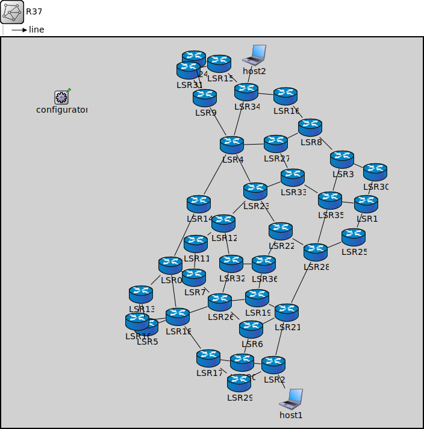

Package: inet.examples.mpls.net37
R37
network(no description)
Usage diagram
The following diagram shows usage relationships between types. Unresolved types are missing from the diagram.
Properties
| Name | Value | Description |
|---|---|---|
| isNetwork |
Unassigned submodule parameters
| Name | Type | Default value | Description |
|---|---|---|---|
| configurator.minLinkWeight | double | 1E-3 | |
| configurator.configureIsolatedNetworksSeparatly | bool | false | |
| configurator.config | xml | xml(" |
XML configuration parameters for IP address assignment and adding manual routes |
| configurator.assignAddresses | bool | true |
assign IP addresses to all interfaces in the network |
| configurator.assignUniqueAddresses | bool | true |
avoid using the same address and raise an error if not possible |
| configurator.assignDisjunctSubnetAddresses | bool | true |
avoid using the same address prefix and netmask on different links when assigning IP addresses to interfaces |
| configurator.addStaticRoutes | bool | true |
add static routes to the routing tables of all nodes to route to all destination interfaces (only where applicable; turn off when config file contains manual routes) |
| configurator.addDefaultRoutes | bool | true |
add default routes if all routes from a source node go through the same gateway (used only if addStaticRoutes is true) |
| configurator.addSubnetRoutes | bool | true |
add subnet routes instead of destination interface routes (only where applicable; used only if addStaticRoutes is true) |
| configurator.addDirectRoutes | bool | true |
add direct routes (i.e. directly connected interfaces) to the routing table (used only if addStaticRoutes is true) |
| configurator.optimizeRoutes | bool | true |
optimize routing tables by merging routes, the resulting routing table might route more packets than the original (used only if addStaticRoutes is true) |
| configurator.dumpTopology | bool | false |
print extracted network topology to the module output |
| configurator.dumpLinks | bool | false |
print recognized network links to the module output |
| configurator.dumpAddresses | bool | false |
print assigned IP addresses for all interfaces to the module output |
| configurator.dumpRoutes | bool | false |
print configured and optimized routing tables for all nodes to the module output |
| configurator.dumpConfig | string | "" |
write configuration into the given config file that can be fed back to speed up subsequent runs (network configurations) |
| LSR0.status.initialStatus | string | "UP" |
TODO @signal, @statistic |
| LSR0.interfaceTable.displayAddresses | bool | false |
whether to display IP addresses on links |
| LSR0.ted.interfaceTableModule | string |
The path to the InterfaceTable module |
|
| LSR0.ted.routingTableModule | string | ||
| LSR0.linkStateRouting.interfaceTableModule | string |
The path to the InterfaceTable module |
|
| LSR0.linkStateRouting.routingTableModule | string | ||
| LSR0.linkStateRouting.tedModule | string | ||
| LSR0.rsvp.interfaceTableModule | string |
The path to the InterfaceTable module |
|
| LSR0.rsvp.routingTableModule | string | ||
| LSR0.rsvp.libTableModule | string | ||
| LSR0.rsvp.tedModule | string | ||
| LSR0.rsvp.traffic | xml | xml(" |
specifies paths to set up |
| LSR0.rsvp.helloInterval | double | ||
| LSR0.rsvp.helloTimeout | double | ||
| LSR0.tn.displayStringTextFormat | string | "processed %p pk (%l)" |
determines the text that is written on top of the submodule |
| LSR0.tn.forwardServiceRegistration | bool | true | |
| LSR0.tn.forwardProtocolRegistration | bool | true | |
| LSR0.ipv4.routingTable.interfaceTableModule | string |
The path to the InterfaceTable module |
|
| LSR0.ipv4.routingTable.routerId | string | "auto" |
for routers, the router id using IPv4 address dotted notation; specify "auto" to select the highest interface address; should be left empty ("") for hosts |
| LSR0.ipv4.routingTable.netmaskRoutes | string | "*" |
maintain netmask routes for interfaces |
| LSR0.ipv4.routingTable.forwarding | bool | true |
turns IP forwarding on/off |
| LSR0.ipv4.routingTable.multicastForwarding | bool | false |
turns multicast forwarding on/off |
| LSR0.ipv4.routingTable.useAdminDist | bool | false |
Use Cisco like administrative distances |
| LSR0.ipv4.routingTable.routingFile | string | "" |
routing table file name |
| LSR0.ipv4.natTable.networkProtocolModule | string | "^.ip" | |
| LSR0.ipv4.natTable.config | xml | xml(" |
XML configuration parameters for network address translation |
| LSR0.ipv4.up.displayStringTextFormat | string | "processed %p pk (%l)" |
determines the text that is written on top of the submodule |
| LSR0.ipv4.up.forwardServiceRegistration | bool | true | |
| LSR0.ipv4.up.forwardProtocolRegistration | bool | true | |
| LSR0.ipv4.icmp.interfaceTableModule | string |
The path to the InterfaceTable module |
|
| LSR0.ipv4.icmp.routingTableModule | string | ||
| LSR0.ipv4.icmp.crcMode | string | "declared" | |
| LSR0.ipv4.icmp.quoteLength | int | 8B |
Number of bytes from original packet to quote in ICMP reply |
| LSR0.ipv4.mp.displayStringTextFormat | string | "processed %p pk (%l)" |
determines the text that is written on top of the submodule |
| LSR0.ipv4.mp.forwardServiceRegistration | bool | true | |
| LSR0.ipv4.mp.forwardProtocolRegistration | bool | true | |
| LSR0.ipv4.lp.displayStringTextFormat | string | "processed %p pk (%l)" |
determines the text that is written on top of the submodule |
| LSR0.ipv4.lp.forwardServiceRegistration | bool | true | |
| LSR0.ipv4.lp.forwardProtocolRegistration | bool | true | |
| LSR0.nm.displayStringTextFormat | string | "processed %p pk (%l)" |
determines the text that is written on top of the submodule |
| LSR0.nm.forwardServiceRegistration | bool | true | |
| LSR0.nm.forwardProtocolRegistration | bool | true | |
| LSR0.mpls.interfaceTableModule | string |
The path to the InterfaceTable module |
|
| LSR0.mpls.libTableModule | string | ||
| LSR0.libTable.config | xml | xml(" |
table contents to be loaded on startup |
| LSR0.ml.displayStringTextFormat | string | "processed %p pk (%l)" |
determines the text that is written on top of the submodule |
| LSR0.ml.forwardServiceRegistration | bool | true | |
| LSR0.ml.forwardProtocolRegistration | bool | true | |
| LSR1.status.initialStatus | string | "UP" |
TODO @signal, @statistic |
| LSR1.interfaceTable.displayAddresses | bool | false |
whether to display IP addresses on links |
| LSR1.ted.interfaceTableModule | string |
The path to the InterfaceTable module |
|
| LSR1.ted.routingTableModule | string | ||
| LSR1.linkStateRouting.interfaceTableModule | string |
The path to the InterfaceTable module |
|
| LSR1.linkStateRouting.routingTableModule | string | ||
| LSR1.linkStateRouting.tedModule | string | ||
| LSR1.rsvp.interfaceTableModule | string |
The path to the InterfaceTable module |
|
| LSR1.rsvp.routingTableModule | string | ||
| LSR1.rsvp.libTableModule | string | ||
| LSR1.rsvp.tedModule | string | ||
| LSR1.rsvp.traffic | xml | xml(" |
specifies paths to set up |
| LSR1.rsvp.helloInterval | double | ||
| LSR1.rsvp.helloTimeout | double | ||
| LSR1.tn.displayStringTextFormat | string | "processed %p pk (%l)" |
determines the text that is written on top of the submodule |
| LSR1.tn.forwardServiceRegistration | bool | true | |
| LSR1.tn.forwardProtocolRegistration | bool | true | |
| LSR1.ipv4.routingTable.interfaceTableModule | string |
The path to the InterfaceTable module |
|
| LSR1.ipv4.routingTable.routerId | string | "auto" |
for routers, the router id using IPv4 address dotted notation; specify "auto" to select the highest interface address; should be left empty ("") for hosts |
| LSR1.ipv4.routingTable.netmaskRoutes | string | "*" |
maintain netmask routes for interfaces |
| LSR1.ipv4.routingTable.forwarding | bool | true |
turns IP forwarding on/off |
| LSR1.ipv4.routingTable.multicastForwarding | bool | false |
turns multicast forwarding on/off |
| LSR1.ipv4.routingTable.useAdminDist | bool | false |
Use Cisco like administrative distances |
| LSR1.ipv4.routingTable.routingFile | string | "" |
routing table file name |
| LSR1.ipv4.natTable.networkProtocolModule | string | "^.ip" | |
| LSR1.ipv4.natTable.config | xml | xml(" |
XML configuration parameters for network address translation |
| LSR1.ipv4.up.displayStringTextFormat | string | "processed %p pk (%l)" |
determines the text that is written on top of the submodule |
| LSR1.ipv4.up.forwardServiceRegistration | bool | true | |
| LSR1.ipv4.up.forwardProtocolRegistration | bool | true | |
| LSR1.ipv4.icmp.interfaceTableModule | string |
The path to the InterfaceTable module |
|
| LSR1.ipv4.icmp.routingTableModule | string | ||
| LSR1.ipv4.icmp.crcMode | string | "declared" | |
| LSR1.ipv4.icmp.quoteLength | int | 8B |
Number of bytes from original packet to quote in ICMP reply |
| LSR1.ipv4.mp.displayStringTextFormat | string | "processed %p pk (%l)" |
determines the text that is written on top of the submodule |
| LSR1.ipv4.mp.forwardServiceRegistration | bool | true | |
| LSR1.ipv4.mp.forwardProtocolRegistration | bool | true | |
| LSR1.ipv4.lp.displayStringTextFormat | string | "processed %p pk (%l)" |
determines the text that is written on top of the submodule |
| LSR1.ipv4.lp.forwardServiceRegistration | bool | true | |
| LSR1.ipv4.lp.forwardProtocolRegistration | bool | true | |
| LSR1.nm.displayStringTextFormat | string | "processed %p pk (%l)" |
determines the text that is written on top of the submodule |
| LSR1.nm.forwardServiceRegistration | bool | true | |
| LSR1.nm.forwardProtocolRegistration | bool | true | |
| LSR1.mpls.interfaceTableModule | string |
The path to the InterfaceTable module |
|
| LSR1.mpls.libTableModule | string | ||
| LSR1.libTable.config | xml | xml(" |
table contents to be loaded on startup |
| LSR1.ml.displayStringTextFormat | string | "processed %p pk (%l)" |
determines the text that is written on top of the submodule |
| LSR1.ml.forwardServiceRegistration | bool | true | |
| LSR1.ml.forwardProtocolRegistration | bool | true | |
| LSR2.status.initialStatus | string | "UP" |
TODO @signal, @statistic |
| LSR2.interfaceTable.displayAddresses | bool | false |
whether to display IP addresses on links |
| LSR2.ted.interfaceTableModule | string |
The path to the InterfaceTable module |
|
| LSR2.ted.routingTableModule | string | ||
| LSR2.linkStateRouting.interfaceTableModule | string |
The path to the InterfaceTable module |
|
| LSR2.linkStateRouting.routingTableModule | string | ||
| LSR2.linkStateRouting.tedModule | string | ||
| LSR2.rsvp.interfaceTableModule | string |
The path to the InterfaceTable module |
|
| LSR2.rsvp.routingTableModule | string | ||
| LSR2.rsvp.libTableModule | string | ||
| LSR2.rsvp.tedModule | string | ||
| LSR2.rsvp.traffic | xml | xml(" |
specifies paths to set up |
| LSR2.rsvp.helloInterval | double | ||
| LSR2.rsvp.helloTimeout | double | ||
| LSR2.tn.displayStringTextFormat | string | "processed %p pk (%l)" |
determines the text that is written on top of the submodule |
| LSR2.tn.forwardServiceRegistration | bool | true | |
| LSR2.tn.forwardProtocolRegistration | bool | true | |
| LSR2.ipv4.routingTable.interfaceTableModule | string |
The path to the InterfaceTable module |
|
| LSR2.ipv4.routingTable.routerId | string | "auto" |
for routers, the router id using IPv4 address dotted notation; specify "auto" to select the highest interface address; should be left empty ("") for hosts |
| LSR2.ipv4.routingTable.netmaskRoutes | string | "*" |
maintain netmask routes for interfaces |
| LSR2.ipv4.routingTable.forwarding | bool | true |
turns IP forwarding on/off |
| LSR2.ipv4.routingTable.multicastForwarding | bool | false |
turns multicast forwarding on/off |
| LSR2.ipv4.routingTable.useAdminDist | bool | false |
Use Cisco like administrative distances |
| LSR2.ipv4.routingTable.routingFile | string | "" |
routing table file name |
| LSR2.ipv4.natTable.networkProtocolModule | string | "^.ip" | |
| LSR2.ipv4.natTable.config | xml | xml(" |
XML configuration parameters for network address translation |
| LSR2.ipv4.up.displayStringTextFormat | string | "processed %p pk (%l)" |
determines the text that is written on top of the submodule |
| LSR2.ipv4.up.forwardServiceRegistration | bool | true | |
| LSR2.ipv4.up.forwardProtocolRegistration | bool | true | |
| LSR2.ipv4.icmp.interfaceTableModule | string |
The path to the InterfaceTable module |
|
| LSR2.ipv4.icmp.routingTableModule | string | ||
| LSR2.ipv4.icmp.crcMode | string | "declared" | |
| LSR2.ipv4.icmp.quoteLength | int | 8B |
Number of bytes from original packet to quote in ICMP reply |
| LSR2.ipv4.mp.displayStringTextFormat | string | "processed %p pk (%l)" |
determines the text that is written on top of the submodule |
| LSR2.ipv4.mp.forwardServiceRegistration | bool | true | |
| LSR2.ipv4.mp.forwardProtocolRegistration | bool | true | |
| LSR2.ipv4.lp.displayStringTextFormat | string | "processed %p pk (%l)" |
determines the text that is written on top of the submodule |
| LSR2.ipv4.lp.forwardServiceRegistration | bool | true | |
| LSR2.ipv4.lp.forwardProtocolRegistration | bool | true | |
| LSR2.nm.displayStringTextFormat | string | "processed %p pk (%l)" |
determines the text that is written on top of the submodule |
| LSR2.nm.forwardServiceRegistration | bool | true | |
| LSR2.nm.forwardProtocolRegistration | bool | true | |
| LSR2.mpls.interfaceTableModule | string |
The path to the InterfaceTable module |
|
| LSR2.mpls.libTableModule | string | ||
| LSR2.libTable.config | xml | xml(" |
table contents to be loaded on startup |
| LSR2.ml.displayStringTextFormat | string | "processed %p pk (%l)" |
determines the text that is written on top of the submodule |
| LSR2.ml.forwardServiceRegistration | bool | true | |
| LSR2.ml.forwardProtocolRegistration | bool | true | |
| LSR3.status.initialStatus | string | "UP" |
TODO @signal, @statistic |
| LSR3.interfaceTable.displayAddresses | bool | false |
whether to display IP addresses on links |
| LSR3.ted.interfaceTableModule | string |
The path to the InterfaceTable module |
|
| LSR3.ted.routingTableModule | string | ||
| LSR3.linkStateRouting.interfaceTableModule | string |
The path to the InterfaceTable module |
|
| LSR3.linkStateRouting.routingTableModule | string | ||
| LSR3.linkStateRouting.tedModule | string | ||
| LSR3.rsvp.interfaceTableModule | string |
The path to the InterfaceTable module |
|
| LSR3.rsvp.routingTableModule | string | ||
| LSR3.rsvp.libTableModule | string | ||
| LSR3.rsvp.tedModule | string | ||
| LSR3.rsvp.traffic | xml | xml(" |
specifies paths to set up |
| LSR3.rsvp.helloInterval | double | ||
| LSR3.rsvp.helloTimeout | double | ||
| LSR3.tn.displayStringTextFormat | string | "processed %p pk (%l)" |
determines the text that is written on top of the submodule |
| LSR3.tn.forwardServiceRegistration | bool | true | |
| LSR3.tn.forwardProtocolRegistration | bool | true | |
| LSR3.ipv4.routingTable.interfaceTableModule | string |
The path to the InterfaceTable module |
|
| LSR3.ipv4.routingTable.routerId | string | "auto" |
for routers, the router id using IPv4 address dotted notation; specify "auto" to select the highest interface address; should be left empty ("") for hosts |
| LSR3.ipv4.routingTable.netmaskRoutes | string | "*" |
maintain netmask routes for interfaces |
| LSR3.ipv4.routingTable.forwarding | bool | true |
turns IP forwarding on/off |
| LSR3.ipv4.routingTable.multicastForwarding | bool | false |
turns multicast forwarding on/off |
| LSR3.ipv4.routingTable.useAdminDist | bool | false |
Use Cisco like administrative distances |
| LSR3.ipv4.routingTable.routingFile | string | "" |
routing table file name |
| LSR3.ipv4.natTable.networkProtocolModule | string | "^.ip" | |
| LSR3.ipv4.natTable.config | xml | xml(" |
XML configuration parameters for network address translation |
| LSR3.ipv4.up.displayStringTextFormat | string | "processed %p pk (%l)" |
determines the text that is written on top of the submodule |
| LSR3.ipv4.up.forwardServiceRegistration | bool | true | |
| LSR3.ipv4.up.forwardProtocolRegistration | bool | true | |
| LSR3.ipv4.icmp.interfaceTableModule | string |
The path to the InterfaceTable module |
|
| LSR3.ipv4.icmp.routingTableModule | string | ||
| LSR3.ipv4.icmp.crcMode | string | "declared" | |
| LSR3.ipv4.icmp.quoteLength | int | 8B |
Number of bytes from original packet to quote in ICMP reply |
| LSR3.ipv4.mp.displayStringTextFormat | string | "processed %p pk (%l)" |
determines the text that is written on top of the submodule |
| LSR3.ipv4.mp.forwardServiceRegistration | bool | true | |
| LSR3.ipv4.mp.forwardProtocolRegistration | bool | true | |
| LSR3.ipv4.lp.displayStringTextFormat | string | "processed %p pk (%l)" |
determines the text that is written on top of the submodule |
| LSR3.ipv4.lp.forwardServiceRegistration | bool | true | |
| LSR3.ipv4.lp.forwardProtocolRegistration | bool | true | |
| LSR3.nm.displayStringTextFormat | string | "processed %p pk (%l)" |
determines the text that is written on top of the submodule |
| LSR3.nm.forwardServiceRegistration | bool | true | |
| LSR3.nm.forwardProtocolRegistration | bool | true | |
| LSR3.mpls.interfaceTableModule | string |
The path to the InterfaceTable module |
|
| LSR3.mpls.libTableModule | string | ||
| LSR3.libTable.config | xml | xml(" |
table contents to be loaded on startup |
| LSR3.ml.displayStringTextFormat | string | "processed %p pk (%l)" |
determines the text that is written on top of the submodule |
| LSR3.ml.forwardServiceRegistration | bool | true | |
| LSR3.ml.forwardProtocolRegistration | bool | true | |
| LSR4.status.initialStatus | string | "UP" |
TODO @signal, @statistic |
| LSR4.interfaceTable.displayAddresses | bool | false |
whether to display IP addresses on links |
| LSR4.ted.interfaceTableModule | string |
The path to the InterfaceTable module |
|
| LSR4.ted.routingTableModule | string | ||
| LSR4.linkStateRouting.interfaceTableModule | string |
The path to the InterfaceTable module |
|
| LSR4.linkStateRouting.routingTableModule | string | ||
| LSR4.linkStateRouting.tedModule | string | ||
| LSR4.rsvp.interfaceTableModule | string |
The path to the InterfaceTable module |
|
| LSR4.rsvp.routingTableModule | string | ||
| LSR4.rsvp.libTableModule | string | ||
| LSR4.rsvp.tedModule | string | ||
| LSR4.rsvp.traffic | xml | xml(" |
specifies paths to set up |
| LSR4.rsvp.helloInterval | double | ||
| LSR4.rsvp.helloTimeout | double | ||
| LSR4.tn.displayStringTextFormat | string | "processed %p pk (%l)" |
determines the text that is written on top of the submodule |
| LSR4.tn.forwardServiceRegistration | bool | true | |
| LSR4.tn.forwardProtocolRegistration | bool | true | |
| LSR4.ipv4.routingTable.interfaceTableModule | string |
The path to the InterfaceTable module |
|
| LSR4.ipv4.routingTable.routerId | string | "auto" |
for routers, the router id using IPv4 address dotted notation; specify "auto" to select the highest interface address; should be left empty ("") for hosts |
| LSR4.ipv4.routingTable.netmaskRoutes | string | "*" |
maintain netmask routes for interfaces |
| LSR4.ipv4.routingTable.forwarding | bool | true |
turns IP forwarding on/off |
| LSR4.ipv4.routingTable.multicastForwarding | bool | false |
turns multicast forwarding on/off |
| LSR4.ipv4.routingTable.useAdminDist | bool | false |
Use Cisco like administrative distances |
| LSR4.ipv4.routingTable.routingFile | string | "" |
routing table file name |
| LSR4.ipv4.natTable.networkProtocolModule | string | "^.ip" | |
| LSR4.ipv4.natTable.config | xml | xml(" |
XML configuration parameters for network address translation |
| LSR4.ipv4.up.displayStringTextFormat | string | "processed %p pk (%l)" |
determines the text that is written on top of the submodule |
| LSR4.ipv4.up.forwardServiceRegistration | bool | true | |
| LSR4.ipv4.up.forwardProtocolRegistration | bool | true | |
| LSR4.ipv4.icmp.interfaceTableModule | string |
The path to the InterfaceTable module |
|
| LSR4.ipv4.icmp.routingTableModule | string | ||
| LSR4.ipv4.icmp.crcMode | string | "declared" | |
| LSR4.ipv4.icmp.quoteLength | int | 8B |
Number of bytes from original packet to quote in ICMP reply |
| LSR4.ipv4.mp.displayStringTextFormat | string | "processed %p pk (%l)" |
determines the text that is written on top of the submodule |
| LSR4.ipv4.mp.forwardServiceRegistration | bool | true | |
| LSR4.ipv4.mp.forwardProtocolRegistration | bool | true | |
| LSR4.ipv4.lp.displayStringTextFormat | string | "processed %p pk (%l)" |
determines the text that is written on top of the submodule |
| LSR4.ipv4.lp.forwardServiceRegistration | bool | true | |
| LSR4.ipv4.lp.forwardProtocolRegistration | bool | true | |
| LSR4.nm.displayStringTextFormat | string | "processed %p pk (%l)" |
determines the text that is written on top of the submodule |
| LSR4.nm.forwardServiceRegistration | bool | true | |
| LSR4.nm.forwardProtocolRegistration | bool | true | |
| LSR4.mpls.interfaceTableModule | string |
The path to the InterfaceTable module |
|
| LSR4.mpls.libTableModule | string | ||
| LSR4.libTable.config | xml | xml(" |
table contents to be loaded on startup |
| LSR4.ml.displayStringTextFormat | string | "processed %p pk (%l)" |
determines the text that is written on top of the submodule |
| LSR4.ml.forwardServiceRegistration | bool | true | |
| LSR4.ml.forwardProtocolRegistration | bool | true | |
| LSR5.status.initialStatus | string | "UP" |
TODO @signal, @statistic |
| LSR5.interfaceTable.displayAddresses | bool | false |
whether to display IP addresses on links |
| LSR5.ted.interfaceTableModule | string |
The path to the InterfaceTable module |
|
| LSR5.ted.routingTableModule | string | ||
| LSR5.linkStateRouting.interfaceTableModule | string |
The path to the InterfaceTable module |
|
| LSR5.linkStateRouting.routingTableModule | string | ||
| LSR5.linkStateRouting.tedModule | string | ||
| LSR5.rsvp.interfaceTableModule | string |
The path to the InterfaceTable module |
|
| LSR5.rsvp.routingTableModule | string | ||
| LSR5.rsvp.libTableModule | string | ||
| LSR5.rsvp.tedModule | string | ||
| LSR5.rsvp.traffic | xml | xml(" |
specifies paths to set up |
| LSR5.rsvp.helloInterval | double | ||
| LSR5.rsvp.helloTimeout | double | ||
| LSR5.tn.displayStringTextFormat | string | "processed %p pk (%l)" |
determines the text that is written on top of the submodule |
| LSR5.tn.forwardServiceRegistration | bool | true | |
| LSR5.tn.forwardProtocolRegistration | bool | true | |
| LSR5.ipv4.routingTable.interfaceTableModule | string |
The path to the InterfaceTable module |
|
| LSR5.ipv4.routingTable.routerId | string | "auto" |
for routers, the router id using IPv4 address dotted notation; specify "auto" to select the highest interface address; should be left empty ("") for hosts |
| LSR5.ipv4.routingTable.netmaskRoutes | string | "*" |
maintain netmask routes for interfaces |
| LSR5.ipv4.routingTable.forwarding | bool | true |
turns IP forwarding on/off |
| LSR5.ipv4.routingTable.multicastForwarding | bool | false |
turns multicast forwarding on/off |
| LSR5.ipv4.routingTable.useAdminDist | bool | false |
Use Cisco like administrative distances |
| LSR5.ipv4.routingTable.routingFile | string | "" |
routing table file name |
| LSR5.ipv4.natTable.networkProtocolModule | string | "^.ip" | |
| LSR5.ipv4.natTable.config | xml | xml(" |
XML configuration parameters for network address translation |
| LSR5.ipv4.up.displayStringTextFormat | string | "processed %p pk (%l)" |
determines the text that is written on top of the submodule |
| LSR5.ipv4.up.forwardServiceRegistration | bool | true | |
| LSR5.ipv4.up.forwardProtocolRegistration | bool | true | |
| LSR5.ipv4.icmp.interfaceTableModule | string |
The path to the InterfaceTable module |
|
| LSR5.ipv4.icmp.routingTableModule | string | ||
| LSR5.ipv4.icmp.crcMode | string | "declared" | |
| LSR5.ipv4.icmp.quoteLength | int | 8B |
Number of bytes from original packet to quote in ICMP reply |
| LSR5.ipv4.mp.displayStringTextFormat | string | "processed %p pk (%l)" |
determines the text that is written on top of the submodule |
| LSR5.ipv4.mp.forwardServiceRegistration | bool | true | |
| LSR5.ipv4.mp.forwardProtocolRegistration | bool | true | |
| LSR5.ipv4.lp.displayStringTextFormat | string | "processed %p pk (%l)" |
determines the text that is written on top of the submodule |
| LSR5.ipv4.lp.forwardServiceRegistration | bool | true | |
| LSR5.ipv4.lp.forwardProtocolRegistration | bool | true | |
| LSR5.nm.displayStringTextFormat | string | "processed %p pk (%l)" |
determines the text that is written on top of the submodule |
| LSR5.nm.forwardServiceRegistration | bool | true | |
| LSR5.nm.forwardProtocolRegistration | bool | true | |
| LSR5.mpls.interfaceTableModule | string |
The path to the InterfaceTable module |
|
| LSR5.mpls.libTableModule | string | ||
| LSR5.libTable.config | xml | xml(" |
table contents to be loaded on startup |
| LSR5.ml.displayStringTextFormat | string | "processed %p pk (%l)" |
determines the text that is written on top of the submodule |
| LSR5.ml.forwardServiceRegistration | bool | true | |
| LSR5.ml.forwardProtocolRegistration | bool | true | |
| LSR6.status.initialStatus | string | "UP" |
TODO @signal, @statistic |
| LSR6.interfaceTable.displayAddresses | bool | false |
whether to display IP addresses on links |
| LSR6.ted.interfaceTableModule | string |
The path to the InterfaceTable module |
|
| LSR6.ted.routingTableModule | string | ||
| LSR6.linkStateRouting.interfaceTableModule | string |
The path to the InterfaceTable module |
|
| LSR6.linkStateRouting.routingTableModule | string | ||
| LSR6.linkStateRouting.tedModule | string | ||
| LSR6.rsvp.interfaceTableModule | string |
The path to the InterfaceTable module |
|
| LSR6.rsvp.routingTableModule | string | ||
| LSR6.rsvp.libTableModule | string | ||
| LSR6.rsvp.tedModule | string | ||
| LSR6.rsvp.traffic | xml | xml(" |
specifies paths to set up |
| LSR6.rsvp.helloInterval | double | ||
| LSR6.rsvp.helloTimeout | double | ||
| LSR6.tn.displayStringTextFormat | string | "processed %p pk (%l)" |
determines the text that is written on top of the submodule |
| LSR6.tn.forwardServiceRegistration | bool | true | |
| LSR6.tn.forwardProtocolRegistration | bool | true | |
| LSR6.ipv4.routingTable.interfaceTableModule | string |
The path to the InterfaceTable module |
|
| LSR6.ipv4.routingTable.routerId | string | "auto" |
for routers, the router id using IPv4 address dotted notation; specify "auto" to select the highest interface address; should be left empty ("") for hosts |
| LSR6.ipv4.routingTable.netmaskRoutes | string | "*" |
maintain netmask routes for interfaces |
| LSR6.ipv4.routingTable.forwarding | bool | true |
turns IP forwarding on/off |
| LSR6.ipv4.routingTable.multicastForwarding | bool | false |
turns multicast forwarding on/off |
| LSR6.ipv4.routingTable.useAdminDist | bool | false |
Use Cisco like administrative distances |
| LSR6.ipv4.routingTable.routingFile | string | "" |
routing table file name |
| LSR6.ipv4.natTable.networkProtocolModule | string | "^.ip" | |
| LSR6.ipv4.natTable.config | xml | xml(" |
XML configuration parameters for network address translation |
| LSR6.ipv4.up.displayStringTextFormat | string | "processed %p pk (%l)" |
determines the text that is written on top of the submodule |
| LSR6.ipv4.up.forwardServiceRegistration | bool | true | |
| LSR6.ipv4.up.forwardProtocolRegistration | bool | true | |
| LSR6.ipv4.icmp.interfaceTableModule | string |
The path to the InterfaceTable module |
|
| LSR6.ipv4.icmp.routingTableModule | string | ||
| LSR6.ipv4.icmp.crcMode | string | "declared" | |
| LSR6.ipv4.icmp.quoteLength | int | 8B |
Number of bytes from original packet to quote in ICMP reply |
| LSR6.ipv4.mp.displayStringTextFormat | string | "processed %p pk (%l)" |
determines the text that is written on top of the submodule |
| LSR6.ipv4.mp.forwardServiceRegistration | bool | true | |
| LSR6.ipv4.mp.forwardProtocolRegistration | bool | true | |
| LSR6.ipv4.lp.displayStringTextFormat | string | "processed %p pk (%l)" |
determines the text that is written on top of the submodule |
| LSR6.ipv4.lp.forwardServiceRegistration | bool | true | |
| LSR6.ipv4.lp.forwardProtocolRegistration | bool | true | |
| LSR6.nm.displayStringTextFormat | string | "processed %p pk (%l)" |
determines the text that is written on top of the submodule |
| LSR6.nm.forwardServiceRegistration | bool | true | |
| LSR6.nm.forwardProtocolRegistration | bool | true | |
| LSR6.mpls.interfaceTableModule | string |
The path to the InterfaceTable module |
|
| LSR6.mpls.libTableModule | string | ||
| LSR6.libTable.config | xml | xml(" |
table contents to be loaded on startup |
| LSR6.ml.displayStringTextFormat | string | "processed %p pk (%l)" |
determines the text that is written on top of the submodule |
| LSR6.ml.forwardServiceRegistration | bool | true | |
| LSR6.ml.forwardProtocolRegistration | bool | true | |
| LSR7.status.initialStatus | string | "UP" |
TODO @signal, @statistic |
| LSR7.interfaceTable.displayAddresses | bool | false |
whether to display IP addresses on links |
| LSR7.ted.interfaceTableModule | string |
The path to the InterfaceTable module |
|
| LSR7.ted.routingTableModule | string | ||
| LSR7.linkStateRouting.interfaceTableModule | string |
The path to the InterfaceTable module |
|
| LSR7.linkStateRouting.routingTableModule | string | ||
| LSR7.linkStateRouting.tedModule | string | ||
| LSR7.rsvp.interfaceTableModule | string |
The path to the InterfaceTable module |
|
| LSR7.rsvp.routingTableModule | string | ||
| LSR7.rsvp.libTableModule | string | ||
| LSR7.rsvp.tedModule | string | ||
| LSR7.rsvp.traffic | xml | xml(" |
specifies paths to set up |
| LSR7.rsvp.helloInterval | double | ||
| LSR7.rsvp.helloTimeout | double | ||
| LSR7.tn.displayStringTextFormat | string | "processed %p pk (%l)" |
determines the text that is written on top of the submodule |
| LSR7.tn.forwardServiceRegistration | bool | true | |
| LSR7.tn.forwardProtocolRegistration | bool | true | |
| LSR7.ipv4.routingTable.interfaceTableModule | string |
The path to the InterfaceTable module |
|
| LSR7.ipv4.routingTable.routerId | string | "auto" |
for routers, the router id using IPv4 address dotted notation; specify "auto" to select the highest interface address; should be left empty ("") for hosts |
| LSR7.ipv4.routingTable.netmaskRoutes | string | "*" |
maintain netmask routes for interfaces |
| LSR7.ipv4.routingTable.forwarding | bool | true |
turns IP forwarding on/off |
| LSR7.ipv4.routingTable.multicastForwarding | bool | false |
turns multicast forwarding on/off |
| LSR7.ipv4.routingTable.useAdminDist | bool | false |
Use Cisco like administrative distances |
| LSR7.ipv4.routingTable.routingFile | string | "" |
routing table file name |
| LSR7.ipv4.natTable.networkProtocolModule | string | "^.ip" | |
| LSR7.ipv4.natTable.config | xml | xml(" |
XML configuration parameters for network address translation |
| LSR7.ipv4.up.displayStringTextFormat | string | "processed %p pk (%l)" |
determines the text that is written on top of the submodule |
| LSR7.ipv4.up.forwardServiceRegistration | bool | true | |
| LSR7.ipv4.up.forwardProtocolRegistration | bool | true | |
| LSR7.ipv4.icmp.interfaceTableModule | string |
The path to the InterfaceTable module |
|
| LSR7.ipv4.icmp.routingTableModule | string | ||
| LSR7.ipv4.icmp.crcMode | string | "declared" | |
| LSR7.ipv4.icmp.quoteLength | int | 8B |
Number of bytes from original packet to quote in ICMP reply |
| LSR7.ipv4.mp.displayStringTextFormat | string | "processed %p pk (%l)" |
determines the text that is written on top of the submodule |
| LSR7.ipv4.mp.forwardServiceRegistration | bool | true | |
| LSR7.ipv4.mp.forwardProtocolRegistration | bool | true | |
| LSR7.ipv4.lp.displayStringTextFormat | string | "processed %p pk (%l)" |
determines the text that is written on top of the submodule |
| LSR7.ipv4.lp.forwardServiceRegistration | bool | true | |
| LSR7.ipv4.lp.forwardProtocolRegistration | bool | true | |
| LSR7.nm.displayStringTextFormat | string | "processed %p pk (%l)" |
determines the text that is written on top of the submodule |
| LSR7.nm.forwardServiceRegistration | bool | true | |
| LSR7.nm.forwardProtocolRegistration | bool | true | |
| LSR7.mpls.interfaceTableModule | string |
The path to the InterfaceTable module |
|
| LSR7.mpls.libTableModule | string | ||
| LSR7.libTable.config | xml | xml(" |
table contents to be loaded on startup |
| LSR7.ml.displayStringTextFormat | string | "processed %p pk (%l)" |
determines the text that is written on top of the submodule |
| LSR7.ml.forwardServiceRegistration | bool | true | |
| LSR7.ml.forwardProtocolRegistration | bool | true | |
| LSR8.status.initialStatus | string | "UP" |
TODO @signal, @statistic |
| LSR8.interfaceTable.displayAddresses | bool | false |
whether to display IP addresses on links |
| LSR8.ted.interfaceTableModule | string |
The path to the InterfaceTable module |
|
| LSR8.ted.routingTableModule | string | ||
| LSR8.linkStateRouting.interfaceTableModule | string |
The path to the InterfaceTable module |
|
| LSR8.linkStateRouting.routingTableModule | string | ||
| LSR8.linkStateRouting.tedModule | string | ||
| LSR8.rsvp.interfaceTableModule | string |
The path to the InterfaceTable module |
|
| LSR8.rsvp.routingTableModule | string | ||
| LSR8.rsvp.libTableModule | string | ||
| LSR8.rsvp.tedModule | string | ||
| LSR8.rsvp.traffic | xml | xml(" |
specifies paths to set up |
| LSR8.rsvp.helloInterval | double | ||
| LSR8.rsvp.helloTimeout | double | ||
| LSR8.tn.displayStringTextFormat | string | "processed %p pk (%l)" |
determines the text that is written on top of the submodule |
| LSR8.tn.forwardServiceRegistration | bool | true | |
| LSR8.tn.forwardProtocolRegistration | bool | true | |
| LSR8.ipv4.routingTable.interfaceTableModule | string |
The path to the InterfaceTable module |
|
| LSR8.ipv4.routingTable.routerId | string | "auto" |
for routers, the router id using IPv4 address dotted notation; specify "auto" to select the highest interface address; should be left empty ("") for hosts |
| LSR8.ipv4.routingTable.netmaskRoutes | string | "*" |
maintain netmask routes for interfaces |
| LSR8.ipv4.routingTable.forwarding | bool | true |
turns IP forwarding on/off |
| LSR8.ipv4.routingTable.multicastForwarding | bool | false |
turns multicast forwarding on/off |
| LSR8.ipv4.routingTable.useAdminDist | bool | false |
Use Cisco like administrative distances |
| LSR8.ipv4.routingTable.routingFile | string | "" |
routing table file name |
| LSR8.ipv4.natTable.networkProtocolModule | string | "^.ip" | |
| LSR8.ipv4.natTable.config | xml | xml(" |
XML configuration parameters for network address translation |
| LSR8.ipv4.up.displayStringTextFormat | string | "processed %p pk (%l)" |
determines the text that is written on top of the submodule |
| LSR8.ipv4.up.forwardServiceRegistration | bool | true | |
| LSR8.ipv4.up.forwardProtocolRegistration | bool | true | |
| LSR8.ipv4.icmp.interfaceTableModule | string |
The path to the InterfaceTable module |
|
| LSR8.ipv4.icmp.routingTableModule | string | ||
| LSR8.ipv4.icmp.crcMode | string | "declared" | |
| LSR8.ipv4.icmp.quoteLength | int | 8B |
Number of bytes from original packet to quote in ICMP reply |
| LSR8.ipv4.mp.displayStringTextFormat | string | "processed %p pk (%l)" |
determines the text that is written on top of the submodule |
| LSR8.ipv4.mp.forwardServiceRegistration | bool | true | |
| LSR8.ipv4.mp.forwardProtocolRegistration | bool | true | |
| LSR8.ipv4.lp.displayStringTextFormat | string | "processed %p pk (%l)" |
determines the text that is written on top of the submodule |
| LSR8.ipv4.lp.forwardServiceRegistration | bool | true | |
| LSR8.ipv4.lp.forwardProtocolRegistration | bool | true | |
| LSR8.nm.displayStringTextFormat | string | "processed %p pk (%l)" |
determines the text that is written on top of the submodule |
| LSR8.nm.forwardServiceRegistration | bool | true | |
| LSR8.nm.forwardProtocolRegistration | bool | true | |
| LSR8.mpls.interfaceTableModule | string |
The path to the InterfaceTable module |
|
| LSR8.mpls.libTableModule | string | ||
| LSR8.libTable.config | xml | xml(" |
table contents to be loaded on startup |
| LSR8.ml.displayStringTextFormat | string | "processed %p pk (%l)" |
determines the text that is written on top of the submodule |
| LSR8.ml.forwardServiceRegistration | bool | true | |
| LSR8.ml.forwardProtocolRegistration | bool | true | |
| LSR9.status.initialStatus | string | "UP" |
TODO @signal, @statistic |
| LSR9.interfaceTable.displayAddresses | bool | false |
whether to display IP addresses on links |
| LSR9.ted.interfaceTableModule | string |
The path to the InterfaceTable module |
|
| LSR9.ted.routingTableModule | string | ||
| LSR9.linkStateRouting.interfaceTableModule | string |
The path to the InterfaceTable module |
|
| LSR9.linkStateRouting.routingTableModule | string | ||
| LSR9.linkStateRouting.tedModule | string | ||
| LSR9.rsvp.interfaceTableModule | string |
The path to the InterfaceTable module |
|
| LSR9.rsvp.routingTableModule | string | ||
| LSR9.rsvp.libTableModule | string | ||
| LSR9.rsvp.tedModule | string | ||
| LSR9.rsvp.traffic | xml | xml(" |
specifies paths to set up |
| LSR9.rsvp.helloInterval | double | ||
| LSR9.rsvp.helloTimeout | double | ||
| LSR9.tn.displayStringTextFormat | string | "processed %p pk (%l)" |
determines the text that is written on top of the submodule |
| LSR9.tn.forwardServiceRegistration | bool | true | |
| LSR9.tn.forwardProtocolRegistration | bool | true | |
| LSR9.ipv4.routingTable.interfaceTableModule | string |
The path to the InterfaceTable module |
|
| LSR9.ipv4.routingTable.routerId | string | "auto" |
for routers, the router id using IPv4 address dotted notation; specify "auto" to select the highest interface address; should be left empty ("") for hosts |
| LSR9.ipv4.routingTable.netmaskRoutes | string | "*" |
maintain netmask routes for interfaces |
| LSR9.ipv4.routingTable.forwarding | bool | true |
turns IP forwarding on/off |
| LSR9.ipv4.routingTable.multicastForwarding | bool | false |
turns multicast forwarding on/off |
| LSR9.ipv4.routingTable.useAdminDist | bool | false |
Use Cisco like administrative distances |
| LSR9.ipv4.routingTable.routingFile | string | "" |
routing table file name |
| LSR9.ipv4.natTable.networkProtocolModule | string | "^.ip" | |
| LSR9.ipv4.natTable.config | xml | xml(" |
XML configuration parameters for network address translation |
| LSR9.ipv4.up.displayStringTextFormat | string | "processed %p pk (%l)" |
determines the text that is written on top of the submodule |
| LSR9.ipv4.up.forwardServiceRegistration | bool | true | |
| LSR9.ipv4.up.forwardProtocolRegistration | bool | true | |
| LSR9.ipv4.icmp.interfaceTableModule | string |
The path to the InterfaceTable module |
|
| LSR9.ipv4.icmp.routingTableModule | string | ||
| LSR9.ipv4.icmp.crcMode | string | "declared" | |
| LSR9.ipv4.icmp.quoteLength | int | 8B |
Number of bytes from original packet to quote in ICMP reply |
| LSR9.ipv4.mp.displayStringTextFormat | string | "processed %p pk (%l)" |
determines the text that is written on top of the submodule |
| LSR9.ipv4.mp.forwardServiceRegistration | bool | true | |
| LSR9.ipv4.mp.forwardProtocolRegistration | bool | true | |
| LSR9.ipv4.lp.displayStringTextFormat | string | "processed %p pk (%l)" |
determines the text that is written on top of the submodule |
| LSR9.ipv4.lp.forwardServiceRegistration | bool | true | |
| LSR9.ipv4.lp.forwardProtocolRegistration | bool | true | |
| LSR9.nm.displayStringTextFormat | string | "processed %p pk (%l)" |
determines the text that is written on top of the submodule |
| LSR9.nm.forwardServiceRegistration | bool | true | |
| LSR9.nm.forwardProtocolRegistration | bool | true | |
| LSR9.mpls.interfaceTableModule | string |
The path to the InterfaceTable module |
|
| LSR9.mpls.libTableModule | string | ||
| LSR9.libTable.config | xml | xml(" |
table contents to be loaded on startup |
| LSR9.ml.displayStringTextFormat | string | "processed %p pk (%l)" |
determines the text that is written on top of the submodule |
| LSR9.ml.forwardServiceRegistration | bool | true | |
| LSR9.ml.forwardProtocolRegistration | bool | true | |
| LSR10.status.initialStatus | string | "UP" |
TODO @signal, @statistic |
| LSR10.interfaceTable.displayAddresses | bool | false |
whether to display IP addresses on links |
| LSR10.ted.interfaceTableModule | string |
The path to the InterfaceTable module |
|
| LSR10.ted.routingTableModule | string | ||
| LSR10.linkStateRouting.interfaceTableModule | string |
The path to the InterfaceTable module |
|
| LSR10.linkStateRouting.routingTableModule | string | ||
| LSR10.linkStateRouting.tedModule | string | ||
| LSR10.rsvp.interfaceTableModule | string |
The path to the InterfaceTable module |
|
| LSR10.rsvp.routingTableModule | string | ||
| LSR10.rsvp.libTableModule | string | ||
| LSR10.rsvp.tedModule | string | ||
| LSR10.rsvp.traffic | xml | xml(" |
specifies paths to set up |
| LSR10.rsvp.helloInterval | double | ||
| LSR10.rsvp.helloTimeout | double | ||
| LSR10.tn.displayStringTextFormat | string | "processed %p pk (%l)" |
determines the text that is written on top of the submodule |
| LSR10.tn.forwardServiceRegistration | bool | true | |
| LSR10.tn.forwardProtocolRegistration | bool | true | |
| LSR10.ipv4.routingTable.interfaceTableModule | string |
The path to the InterfaceTable module |
|
| LSR10.ipv4.routingTable.routerId | string | "auto" |
for routers, the router id using IPv4 address dotted notation; specify "auto" to select the highest interface address; should be left empty ("") for hosts |
| LSR10.ipv4.routingTable.netmaskRoutes | string | "*" |
maintain netmask routes for interfaces |
| LSR10.ipv4.routingTable.forwarding | bool | true |
turns IP forwarding on/off |
| LSR10.ipv4.routingTable.multicastForwarding | bool | false |
turns multicast forwarding on/off |
| LSR10.ipv4.routingTable.useAdminDist | bool | false |
Use Cisco like administrative distances |
| LSR10.ipv4.routingTable.routingFile | string | "" |
routing table file name |
| LSR10.ipv4.natTable.networkProtocolModule | string | "^.ip" | |
| LSR10.ipv4.natTable.config | xml | xml(" |
XML configuration parameters for network address translation |
| LSR10.ipv4.up.displayStringTextFormat | string | "processed %p pk (%l)" |
determines the text that is written on top of the submodule |
| LSR10.ipv4.up.forwardServiceRegistration | bool | true | |
| LSR10.ipv4.up.forwardProtocolRegistration | bool | true | |
| LSR10.ipv4.icmp.interfaceTableModule | string |
The path to the InterfaceTable module |
|
| LSR10.ipv4.icmp.routingTableModule | string | ||
| LSR10.ipv4.icmp.crcMode | string | "declared" | |
| LSR10.ipv4.icmp.quoteLength | int | 8B |
Number of bytes from original packet to quote in ICMP reply |
| LSR10.ipv4.mp.displayStringTextFormat | string | "processed %p pk (%l)" |
determines the text that is written on top of the submodule |
| LSR10.ipv4.mp.forwardServiceRegistration | bool | true | |
| LSR10.ipv4.mp.forwardProtocolRegistration | bool | true | |
| LSR10.ipv4.lp.displayStringTextFormat | string | "processed %p pk (%l)" |
determines the text that is written on top of the submodule |
| LSR10.ipv4.lp.forwardServiceRegistration | bool | true | |
| LSR10.ipv4.lp.forwardProtocolRegistration | bool | true | |
| LSR10.nm.displayStringTextFormat | string | "processed %p pk (%l)" |
determines the text that is written on top of the submodule |
| LSR10.nm.forwardServiceRegistration | bool | true | |
| LSR10.nm.forwardProtocolRegistration | bool | true | |
| LSR10.mpls.interfaceTableModule | string |
The path to the InterfaceTable module |
|
| LSR10.mpls.libTableModule | string | ||
| LSR10.libTable.config | xml | xml(" |
table contents to be loaded on startup |
| LSR10.ml.displayStringTextFormat | string | "processed %p pk (%l)" |
determines the text that is written on top of the submodule |
| LSR10.ml.forwardServiceRegistration | bool | true | |
| LSR10.ml.forwardProtocolRegistration | bool | true | |
| LSR11.status.initialStatus | string | "UP" |
TODO @signal, @statistic |
| LSR11.interfaceTable.displayAddresses | bool | false |
whether to display IP addresses on links |
| LSR11.ted.interfaceTableModule | string |
The path to the InterfaceTable module |
|
| LSR11.ted.routingTableModule | string | ||
| LSR11.linkStateRouting.interfaceTableModule | string |
The path to the InterfaceTable module |
|
| LSR11.linkStateRouting.routingTableModule | string | ||
| LSR11.linkStateRouting.tedModule | string | ||
| LSR11.rsvp.interfaceTableModule | string |
The path to the InterfaceTable module |
|
| LSR11.rsvp.routingTableModule | string | ||
| LSR11.rsvp.libTableModule | string | ||
| LSR11.rsvp.tedModule | string | ||
| LSR11.rsvp.traffic | xml | xml(" |
specifies paths to set up |
| LSR11.rsvp.helloInterval | double | ||
| LSR11.rsvp.helloTimeout | double | ||
| LSR11.tn.displayStringTextFormat | string | "processed %p pk (%l)" |
determines the text that is written on top of the submodule |
| LSR11.tn.forwardServiceRegistration | bool | true | |
| LSR11.tn.forwardProtocolRegistration | bool | true | |
| LSR11.ipv4.routingTable.interfaceTableModule | string |
The path to the InterfaceTable module |
|
| LSR11.ipv4.routingTable.routerId | string | "auto" |
for routers, the router id using IPv4 address dotted notation; specify "auto" to select the highest interface address; should be left empty ("") for hosts |
| LSR11.ipv4.routingTable.netmaskRoutes | string | "*" |
maintain netmask routes for interfaces |
| LSR11.ipv4.routingTable.forwarding | bool | true |
turns IP forwarding on/off |
| LSR11.ipv4.routingTable.multicastForwarding | bool | false |
turns multicast forwarding on/off |
| LSR11.ipv4.routingTable.useAdminDist | bool | false |
Use Cisco like administrative distances |
| LSR11.ipv4.routingTable.routingFile | string | "" |
routing table file name |
| LSR11.ipv4.natTable.networkProtocolModule | string | "^.ip" | |
| LSR11.ipv4.natTable.config | xml | xml(" |
XML configuration parameters for network address translation |
| LSR11.ipv4.up.displayStringTextFormat | string | "processed %p pk (%l)" |
determines the text that is written on top of the submodule |
| LSR11.ipv4.up.forwardServiceRegistration | bool | true | |
| LSR11.ipv4.up.forwardProtocolRegistration | bool | true | |
| LSR11.ipv4.icmp.interfaceTableModule | string |
The path to the InterfaceTable module |
|
| LSR11.ipv4.icmp.routingTableModule | string | ||
| LSR11.ipv4.icmp.crcMode | string | "declared" | |
| LSR11.ipv4.icmp.quoteLength | int | 8B |
Number of bytes from original packet to quote in ICMP reply |
| LSR11.ipv4.mp.displayStringTextFormat | string | "processed %p pk (%l)" |
determines the text that is written on top of the submodule |
| LSR11.ipv4.mp.forwardServiceRegistration | bool | true | |
| LSR11.ipv4.mp.forwardProtocolRegistration | bool | true | |
| LSR11.ipv4.lp.displayStringTextFormat | string | "processed %p pk (%l)" |
determines the text that is written on top of the submodule |
| LSR11.ipv4.lp.forwardServiceRegistration | bool | true | |
| LSR11.ipv4.lp.forwardProtocolRegistration | bool | true | |
| LSR11.nm.displayStringTextFormat | string | "processed %p pk (%l)" |
determines the text that is written on top of the submodule |
| LSR11.nm.forwardServiceRegistration | bool | true | |
| LSR11.nm.forwardProtocolRegistration | bool | true | |
| LSR11.mpls.interfaceTableModule | string |
The path to the InterfaceTable module |
|
| LSR11.mpls.libTableModule | string | ||
| LSR11.libTable.config | xml | xml(" |
table contents to be loaded on startup |
| LSR11.ml.displayStringTextFormat | string | "processed %p pk (%l)" |
determines the text that is written on top of the submodule |
| LSR11.ml.forwardServiceRegistration | bool | true | |
| LSR11.ml.forwardProtocolRegistration | bool | true | |
| LSR12.status.initialStatus | string | "UP" |
TODO @signal, @statistic |
| LSR12.interfaceTable.displayAddresses | bool | false |
whether to display IP addresses on links |
| LSR12.ted.interfaceTableModule | string |
The path to the InterfaceTable module |
|
| LSR12.ted.routingTableModule | string | ||
| LSR12.linkStateRouting.interfaceTableModule | string |
The path to the InterfaceTable module |
|
| LSR12.linkStateRouting.routingTableModule | string | ||
| LSR12.linkStateRouting.tedModule | string | ||
| LSR12.rsvp.interfaceTableModule | string |
The path to the InterfaceTable module |
|
| LSR12.rsvp.routingTableModule | string | ||
| LSR12.rsvp.libTableModule | string | ||
| LSR12.rsvp.tedModule | string | ||
| LSR12.rsvp.traffic | xml | xml(" |
specifies paths to set up |
| LSR12.rsvp.helloInterval | double | ||
| LSR12.rsvp.helloTimeout | double | ||
| LSR12.tn.displayStringTextFormat | string | "processed %p pk (%l)" |
determines the text that is written on top of the submodule |
| LSR12.tn.forwardServiceRegistration | bool | true | |
| LSR12.tn.forwardProtocolRegistration | bool | true | |
| LSR12.ipv4.routingTable.interfaceTableModule | string |
The path to the InterfaceTable module |
|
| LSR12.ipv4.routingTable.routerId | string | "auto" |
for routers, the router id using IPv4 address dotted notation; specify "auto" to select the highest interface address; should be left empty ("") for hosts |
| LSR12.ipv4.routingTable.netmaskRoutes | string | "*" |
maintain netmask routes for interfaces |
| LSR12.ipv4.routingTable.forwarding | bool | true |
turns IP forwarding on/off |
| LSR12.ipv4.routingTable.multicastForwarding | bool | false |
turns multicast forwarding on/off |
| LSR12.ipv4.routingTable.useAdminDist | bool | false |
Use Cisco like administrative distances |
| LSR12.ipv4.routingTable.routingFile | string | "" |
routing table file name |
| LSR12.ipv4.natTable.networkProtocolModule | string | "^.ip" | |
| LSR12.ipv4.natTable.config | xml | xml(" |
XML configuration parameters for network address translation |
| LSR12.ipv4.up.displayStringTextFormat | string | "processed %p pk (%l)" |
determines the text that is written on top of the submodule |
| LSR12.ipv4.up.forwardServiceRegistration | bool | true | |
| LSR12.ipv4.up.forwardProtocolRegistration | bool | true | |
| LSR12.ipv4.icmp.interfaceTableModule | string |
The path to the InterfaceTable module |
|
| LSR12.ipv4.icmp.routingTableModule | string | ||
| LSR12.ipv4.icmp.crcMode | string | "declared" | |
| LSR12.ipv4.icmp.quoteLength | int | 8B |
Number of bytes from original packet to quote in ICMP reply |
| LSR12.ipv4.mp.displayStringTextFormat | string | "processed %p pk (%l)" |
determines the text that is written on top of the submodule |
| LSR12.ipv4.mp.forwardServiceRegistration | bool | true | |
| LSR12.ipv4.mp.forwardProtocolRegistration | bool | true | |
| LSR12.ipv4.lp.displayStringTextFormat | string | "processed %p pk (%l)" |
determines the text that is written on top of the submodule |
| LSR12.ipv4.lp.forwardServiceRegistration | bool | true | |
| LSR12.ipv4.lp.forwardProtocolRegistration | bool | true | |
| LSR12.nm.displayStringTextFormat | string | "processed %p pk (%l)" |
determines the text that is written on top of the submodule |
| LSR12.nm.forwardServiceRegistration | bool | true | |
| LSR12.nm.forwardProtocolRegistration | bool | true | |
| LSR12.mpls.interfaceTableModule | string |
The path to the InterfaceTable module |
|
| LSR12.mpls.libTableModule | string | ||
| LSR12.libTable.config | xml | xml(" |
table contents to be loaded on startup |
| LSR12.ml.displayStringTextFormat | string | "processed %p pk (%l)" |
determines the text that is written on top of the submodule |
| LSR12.ml.forwardServiceRegistration | bool | true | |
| LSR12.ml.forwardProtocolRegistration | bool | true | |
| LSR13.status.initialStatus | string | "UP" |
TODO @signal, @statistic |
| LSR13.interfaceTable.displayAddresses | bool | false |
whether to display IP addresses on links |
| LSR13.ted.interfaceTableModule | string |
The path to the InterfaceTable module |
|
| LSR13.ted.routingTableModule | string | ||
| LSR13.linkStateRouting.interfaceTableModule | string |
The path to the InterfaceTable module |
|
| LSR13.linkStateRouting.routingTableModule | string | ||
| LSR13.linkStateRouting.tedModule | string | ||
| LSR13.rsvp.interfaceTableModule | string |
The path to the InterfaceTable module |
|
| LSR13.rsvp.routingTableModule | string | ||
| LSR13.rsvp.libTableModule | string | ||
| LSR13.rsvp.tedModule | string | ||
| LSR13.rsvp.traffic | xml | xml(" |
specifies paths to set up |
| LSR13.rsvp.helloInterval | double | ||
| LSR13.rsvp.helloTimeout | double | ||
| LSR13.tn.displayStringTextFormat | string | "processed %p pk (%l)" |
determines the text that is written on top of the submodule |
| LSR13.tn.forwardServiceRegistration | bool | true | |
| LSR13.tn.forwardProtocolRegistration | bool | true | |
| LSR13.ipv4.routingTable.interfaceTableModule | string |
The path to the InterfaceTable module |
|
| LSR13.ipv4.routingTable.routerId | string | "auto" |
for routers, the router id using IPv4 address dotted notation; specify "auto" to select the highest interface address; should be left empty ("") for hosts |
| LSR13.ipv4.routingTable.netmaskRoutes | string | "*" |
maintain netmask routes for interfaces |
| LSR13.ipv4.routingTable.forwarding | bool | true |
turns IP forwarding on/off |
| LSR13.ipv4.routingTable.multicastForwarding | bool | false |
turns multicast forwarding on/off |
| LSR13.ipv4.routingTable.useAdminDist | bool | false |
Use Cisco like administrative distances |
| LSR13.ipv4.routingTable.routingFile | string | "" |
routing table file name |
| LSR13.ipv4.natTable.networkProtocolModule | string | "^.ip" | |
| LSR13.ipv4.natTable.config | xml | xml(" |
XML configuration parameters for network address translation |
| LSR13.ipv4.up.displayStringTextFormat | string | "processed %p pk (%l)" |
determines the text that is written on top of the submodule |
| LSR13.ipv4.up.forwardServiceRegistration | bool | true | |
| LSR13.ipv4.up.forwardProtocolRegistration | bool | true | |
| LSR13.ipv4.icmp.interfaceTableModule | string |
The path to the InterfaceTable module |
|
| LSR13.ipv4.icmp.routingTableModule | string | ||
| LSR13.ipv4.icmp.crcMode | string | "declared" | |
| LSR13.ipv4.icmp.quoteLength | int | 8B |
Number of bytes from original packet to quote in ICMP reply |
| LSR13.ipv4.mp.displayStringTextFormat | string | "processed %p pk (%l)" |
determines the text that is written on top of the submodule |
| LSR13.ipv4.mp.forwardServiceRegistration | bool | true | |
| LSR13.ipv4.mp.forwardProtocolRegistration | bool | true | |
| LSR13.ipv4.lp.displayStringTextFormat | string | "processed %p pk (%l)" |
determines the text that is written on top of the submodule |
| LSR13.ipv4.lp.forwardServiceRegistration | bool | true | |
| LSR13.ipv4.lp.forwardProtocolRegistration | bool | true | |
| LSR13.nm.displayStringTextFormat | string | "processed %p pk (%l)" |
determines the text that is written on top of the submodule |
| LSR13.nm.forwardServiceRegistration | bool | true | |
| LSR13.nm.forwardProtocolRegistration | bool | true | |
| LSR13.mpls.interfaceTableModule | string |
The path to the InterfaceTable module |
|
| LSR13.mpls.libTableModule | string | ||
| LSR13.libTable.config | xml | xml(" |
table contents to be loaded on startup |
| LSR13.ml.displayStringTextFormat | string | "processed %p pk (%l)" |
determines the text that is written on top of the submodule |
| LSR13.ml.forwardServiceRegistration | bool | true | |
| LSR13.ml.forwardProtocolRegistration | bool | true | |
| LSR14.status.initialStatus | string | "UP" |
TODO @signal, @statistic |
| LSR14.interfaceTable.displayAddresses | bool | false |
whether to display IP addresses on links |
| LSR14.ted.interfaceTableModule | string |
The path to the InterfaceTable module |
|
| LSR14.ted.routingTableModule | string | ||
| LSR14.linkStateRouting.interfaceTableModule | string |
The path to the InterfaceTable module |
|
| LSR14.linkStateRouting.routingTableModule | string | ||
| LSR14.linkStateRouting.tedModule | string | ||
| LSR14.rsvp.interfaceTableModule | string |
The path to the InterfaceTable module |
|
| LSR14.rsvp.routingTableModule | string | ||
| LSR14.rsvp.libTableModule | string | ||
| LSR14.rsvp.tedModule | string | ||
| LSR14.rsvp.traffic | xml | xml(" |
specifies paths to set up |
| LSR14.rsvp.helloInterval | double | ||
| LSR14.rsvp.helloTimeout | double | ||
| LSR14.tn.displayStringTextFormat | string | "processed %p pk (%l)" |
determines the text that is written on top of the submodule |
| LSR14.tn.forwardServiceRegistration | bool | true | |
| LSR14.tn.forwardProtocolRegistration | bool | true | |
| LSR14.ipv4.routingTable.interfaceTableModule | string |
The path to the InterfaceTable module |
|
| LSR14.ipv4.routingTable.routerId | string | "auto" |
for routers, the router id using IPv4 address dotted notation; specify "auto" to select the highest interface address; should be left empty ("") for hosts |
| LSR14.ipv4.routingTable.netmaskRoutes | string | "*" |
maintain netmask routes for interfaces |
| LSR14.ipv4.routingTable.forwarding | bool | true |
turns IP forwarding on/off |
| LSR14.ipv4.routingTable.multicastForwarding | bool | false |
turns multicast forwarding on/off |
| LSR14.ipv4.routingTable.useAdminDist | bool | false |
Use Cisco like administrative distances |
| LSR14.ipv4.routingTable.routingFile | string | "" |
routing table file name |
| LSR14.ipv4.natTable.networkProtocolModule | string | "^.ip" | |
| LSR14.ipv4.natTable.config | xml | xml(" |
XML configuration parameters for network address translation |
| LSR14.ipv4.up.displayStringTextFormat | string | "processed %p pk (%l)" |
determines the text that is written on top of the submodule |
| LSR14.ipv4.up.forwardServiceRegistration | bool | true | |
| LSR14.ipv4.up.forwardProtocolRegistration | bool | true | |
| LSR14.ipv4.icmp.interfaceTableModule | string |
The path to the InterfaceTable module |
|
| LSR14.ipv4.icmp.routingTableModule | string | ||
| LSR14.ipv4.icmp.crcMode | string | "declared" | |
| LSR14.ipv4.icmp.quoteLength | int | 8B |
Number of bytes from original packet to quote in ICMP reply |
| LSR14.ipv4.mp.displayStringTextFormat | string | "processed %p pk (%l)" |
determines the text that is written on top of the submodule |
| LSR14.ipv4.mp.forwardServiceRegistration | bool | true | |
| LSR14.ipv4.mp.forwardProtocolRegistration | bool | true | |
| LSR14.ipv4.lp.displayStringTextFormat | string | "processed %p pk (%l)" |
determines the text that is written on top of the submodule |
| LSR14.ipv4.lp.forwardServiceRegistration | bool | true | |
| LSR14.ipv4.lp.forwardProtocolRegistration | bool | true | |
| LSR14.nm.displayStringTextFormat | string | "processed %p pk (%l)" |
determines the text that is written on top of the submodule |
| LSR14.nm.forwardServiceRegistration | bool | true | |
| LSR14.nm.forwardProtocolRegistration | bool | true | |
| LSR14.mpls.interfaceTableModule | string |
The path to the InterfaceTable module |
|
| LSR14.mpls.libTableModule | string | ||
| LSR14.libTable.config | xml | xml(" |
table contents to be loaded on startup |
| LSR14.ml.displayStringTextFormat | string | "processed %p pk (%l)" |
determines the text that is written on top of the submodule |
| LSR14.ml.forwardServiceRegistration | bool | true | |
| LSR14.ml.forwardProtocolRegistration | bool | true | |
| LSR15.status.initialStatus | string | "UP" |
TODO @signal, @statistic |
| LSR15.interfaceTable.displayAddresses | bool | false |
whether to display IP addresses on links |
| LSR15.ted.interfaceTableModule | string |
The path to the InterfaceTable module |
|
| LSR15.ted.routingTableModule | string | ||
| LSR15.linkStateRouting.interfaceTableModule | string |
The path to the InterfaceTable module |
|
| LSR15.linkStateRouting.routingTableModule | string | ||
| LSR15.linkStateRouting.tedModule | string | ||
| LSR15.rsvp.interfaceTableModule | string |
The path to the InterfaceTable module |
|
| LSR15.rsvp.routingTableModule | string | ||
| LSR15.rsvp.libTableModule | string | ||
| LSR15.rsvp.tedModule | string | ||
| LSR15.rsvp.traffic | xml | xml(" |
specifies paths to set up |
| LSR15.rsvp.helloInterval | double | ||
| LSR15.rsvp.helloTimeout | double | ||
| LSR15.tn.displayStringTextFormat | string | "processed %p pk (%l)" |
determines the text that is written on top of the submodule |
| LSR15.tn.forwardServiceRegistration | bool | true | |
| LSR15.tn.forwardProtocolRegistration | bool | true | |
| LSR15.ipv4.routingTable.interfaceTableModule | string |
The path to the InterfaceTable module |
|
| LSR15.ipv4.routingTable.routerId | string | "auto" |
for routers, the router id using IPv4 address dotted notation; specify "auto" to select the highest interface address; should be left empty ("") for hosts |
| LSR15.ipv4.routingTable.netmaskRoutes | string | "*" |
maintain netmask routes for interfaces |
| LSR15.ipv4.routingTable.forwarding | bool | true |
turns IP forwarding on/off |
| LSR15.ipv4.routingTable.multicastForwarding | bool | false |
turns multicast forwarding on/off |
| LSR15.ipv4.routingTable.useAdminDist | bool | false |
Use Cisco like administrative distances |
| LSR15.ipv4.routingTable.routingFile | string | "" |
routing table file name |
| LSR15.ipv4.natTable.networkProtocolModule | string | "^.ip" | |
| LSR15.ipv4.natTable.config | xml | xml(" |
XML configuration parameters for network address translation |
| LSR15.ipv4.up.displayStringTextFormat | string | "processed %p pk (%l)" |
determines the text that is written on top of the submodule |
| LSR15.ipv4.up.forwardServiceRegistration | bool | true | |
| LSR15.ipv4.up.forwardProtocolRegistration | bool | true | |
| LSR15.ipv4.icmp.interfaceTableModule | string |
The path to the InterfaceTable module |
|
| LSR15.ipv4.icmp.routingTableModule | string | ||
| LSR15.ipv4.icmp.crcMode | string | "declared" | |
| LSR15.ipv4.icmp.quoteLength | int | 8B |
Number of bytes from original packet to quote in ICMP reply |
| LSR15.ipv4.mp.displayStringTextFormat | string | "processed %p pk (%l)" |
determines the text that is written on top of the submodule |
| LSR15.ipv4.mp.forwardServiceRegistration | bool | true | |
| LSR15.ipv4.mp.forwardProtocolRegistration | bool | true | |
| LSR15.ipv4.lp.displayStringTextFormat | string | "processed %p pk (%l)" |
determines the text that is written on top of the submodule |
| LSR15.ipv4.lp.forwardServiceRegistration | bool | true | |
| LSR15.ipv4.lp.forwardProtocolRegistration | bool | true | |
| LSR15.nm.displayStringTextFormat | string | "processed %p pk (%l)" |
determines the text that is written on top of the submodule |
| LSR15.nm.forwardServiceRegistration | bool | true | |
| LSR15.nm.forwardProtocolRegistration | bool | true | |
| LSR15.mpls.interfaceTableModule | string |
The path to the InterfaceTable module |
|
| LSR15.mpls.libTableModule | string | ||
| LSR15.libTable.config | xml | xml(" |
table contents to be loaded on startup |
| LSR15.ml.displayStringTextFormat | string | "processed %p pk (%l)" |
determines the text that is written on top of the submodule |
| LSR15.ml.forwardServiceRegistration | bool | true | |
| LSR15.ml.forwardProtocolRegistration | bool | true | |
| LSR16.status.initialStatus | string | "UP" |
TODO @signal, @statistic |
| LSR16.interfaceTable.displayAddresses | bool | false |
whether to display IP addresses on links |
| LSR16.ted.interfaceTableModule | string |
The path to the InterfaceTable module |
|
| LSR16.ted.routingTableModule | string | ||
| LSR16.linkStateRouting.interfaceTableModule | string |
The path to the InterfaceTable module |
|
| LSR16.linkStateRouting.routingTableModule | string | ||
| LSR16.linkStateRouting.tedModule | string | ||
| LSR16.rsvp.interfaceTableModule | string |
The path to the InterfaceTable module |
|
| LSR16.rsvp.routingTableModule | string | ||
| LSR16.rsvp.libTableModule | string | ||
| LSR16.rsvp.tedModule | string | ||
| LSR16.rsvp.traffic | xml | xml(" |
specifies paths to set up |
| LSR16.rsvp.helloInterval | double | ||
| LSR16.rsvp.helloTimeout | double | ||
| LSR16.tn.displayStringTextFormat | string | "processed %p pk (%l)" |
determines the text that is written on top of the submodule |
| LSR16.tn.forwardServiceRegistration | bool | true | |
| LSR16.tn.forwardProtocolRegistration | bool | true | |
| LSR16.ipv4.routingTable.interfaceTableModule | string |
The path to the InterfaceTable module |
|
| LSR16.ipv4.routingTable.routerId | string | "auto" |
for routers, the router id using IPv4 address dotted notation; specify "auto" to select the highest interface address; should be left empty ("") for hosts |
| LSR16.ipv4.routingTable.netmaskRoutes | string | "*" |
maintain netmask routes for interfaces |
| LSR16.ipv4.routingTable.forwarding | bool | true |
turns IP forwarding on/off |
| LSR16.ipv4.routingTable.multicastForwarding | bool | false |
turns multicast forwarding on/off |
| LSR16.ipv4.routingTable.useAdminDist | bool | false |
Use Cisco like administrative distances |
| LSR16.ipv4.routingTable.routingFile | string | "" |
routing table file name |
| LSR16.ipv4.natTable.networkProtocolModule | string | "^.ip" | |
| LSR16.ipv4.natTable.config | xml | xml(" |
XML configuration parameters for network address translation |
| LSR16.ipv4.up.displayStringTextFormat | string | "processed %p pk (%l)" |
determines the text that is written on top of the submodule |
| LSR16.ipv4.up.forwardServiceRegistration | bool | true | |
| LSR16.ipv4.up.forwardProtocolRegistration | bool | true | |
| LSR16.ipv4.icmp.interfaceTableModule | string |
The path to the InterfaceTable module |
|
| LSR16.ipv4.icmp.routingTableModule | string | ||
| LSR16.ipv4.icmp.crcMode | string | "declared" | |
| LSR16.ipv4.icmp.quoteLength | int | 8B |
Number of bytes from original packet to quote in ICMP reply |
| LSR16.ipv4.mp.displayStringTextFormat | string | "processed %p pk (%l)" |
determines the text that is written on top of the submodule |
| LSR16.ipv4.mp.forwardServiceRegistration | bool | true | |
| LSR16.ipv4.mp.forwardProtocolRegistration | bool | true | |
| LSR16.ipv4.lp.displayStringTextFormat | string | "processed %p pk (%l)" |
determines the text that is written on top of the submodule |
| LSR16.ipv4.lp.forwardServiceRegistration | bool | true | |
| LSR16.ipv4.lp.forwardProtocolRegistration | bool | true | |
| LSR16.nm.displayStringTextFormat | string | "processed %p pk (%l)" |
determines the text that is written on top of the submodule |
| LSR16.nm.forwardServiceRegistration | bool | true | |
| LSR16.nm.forwardProtocolRegistration | bool | true | |
| LSR16.mpls.interfaceTableModule | string |
The path to the InterfaceTable module |
|
| LSR16.mpls.libTableModule | string | ||
| LSR16.libTable.config | xml | xml(" |
table contents to be loaded on startup |
| LSR16.ml.displayStringTextFormat | string | "processed %p pk (%l)" |
determines the text that is written on top of the submodule |
| LSR16.ml.forwardServiceRegistration | bool | true | |
| LSR16.ml.forwardProtocolRegistration | bool | true | |
| LSR17.status.initialStatus | string | "UP" |
TODO @signal, @statistic |
| LSR17.interfaceTable.displayAddresses | bool | false |
whether to display IP addresses on links |
| LSR17.ted.interfaceTableModule | string |
The path to the InterfaceTable module |
|
| LSR17.ted.routingTableModule | string | ||
| LSR17.linkStateRouting.interfaceTableModule | string |
The path to the InterfaceTable module |
|
| LSR17.linkStateRouting.routingTableModule | string | ||
| LSR17.linkStateRouting.tedModule | string | ||
| LSR17.rsvp.interfaceTableModule | string |
The path to the InterfaceTable module |
|
| LSR17.rsvp.routingTableModule | string | ||
| LSR17.rsvp.libTableModule | string | ||
| LSR17.rsvp.tedModule | string | ||
| LSR17.rsvp.traffic | xml | xml(" |
specifies paths to set up |
| LSR17.rsvp.helloInterval | double | ||
| LSR17.rsvp.helloTimeout | double | ||
| LSR17.tn.displayStringTextFormat | string | "processed %p pk (%l)" |
determines the text that is written on top of the submodule |
| LSR17.tn.forwardServiceRegistration | bool | true | |
| LSR17.tn.forwardProtocolRegistration | bool | true | |
| LSR17.ipv4.routingTable.interfaceTableModule | string |
The path to the InterfaceTable module |
|
| LSR17.ipv4.routingTable.routerId | string | "auto" |
for routers, the router id using IPv4 address dotted notation; specify "auto" to select the highest interface address; should be left empty ("") for hosts |
| LSR17.ipv4.routingTable.netmaskRoutes | string | "*" |
maintain netmask routes for interfaces |
| LSR17.ipv4.routingTable.forwarding | bool | true |
turns IP forwarding on/off |
| LSR17.ipv4.routingTable.multicastForwarding | bool | false |
turns multicast forwarding on/off |
| LSR17.ipv4.routingTable.useAdminDist | bool | false |
Use Cisco like administrative distances |
| LSR17.ipv4.routingTable.routingFile | string | "" |
routing table file name |
| LSR17.ipv4.natTable.networkProtocolModule | string | "^.ip" | |
| LSR17.ipv4.natTable.config | xml | xml(" |
XML configuration parameters for network address translation |
| LSR17.ipv4.up.displayStringTextFormat | string | "processed %p pk (%l)" |
determines the text that is written on top of the submodule |
| LSR17.ipv4.up.forwardServiceRegistration | bool | true | |
| LSR17.ipv4.up.forwardProtocolRegistration | bool | true | |
| LSR17.ipv4.icmp.interfaceTableModule | string |
The path to the InterfaceTable module |
|
| LSR17.ipv4.icmp.routingTableModule | string | ||
| LSR17.ipv4.icmp.crcMode | string | "declared" | |
| LSR17.ipv4.icmp.quoteLength | int | 8B |
Number of bytes from original packet to quote in ICMP reply |
| LSR17.ipv4.mp.displayStringTextFormat | string | "processed %p pk (%l)" |
determines the text that is written on top of the submodule |
| LSR17.ipv4.mp.forwardServiceRegistration | bool | true | |
| LSR17.ipv4.mp.forwardProtocolRegistration | bool | true | |
| LSR17.ipv4.lp.displayStringTextFormat | string | "processed %p pk (%l)" |
determines the text that is written on top of the submodule |
| LSR17.ipv4.lp.forwardServiceRegistration | bool | true | |
| LSR17.ipv4.lp.forwardProtocolRegistration | bool | true | |
| LSR17.nm.displayStringTextFormat | string | "processed %p pk (%l)" |
determines the text that is written on top of the submodule |
| LSR17.nm.forwardServiceRegistration | bool | true | |
| LSR17.nm.forwardProtocolRegistration | bool | true | |
| LSR17.mpls.interfaceTableModule | string |
The path to the InterfaceTable module |
|
| LSR17.mpls.libTableModule | string | ||
| LSR17.libTable.config | xml | xml(" |
table contents to be loaded on startup |
| LSR17.ml.displayStringTextFormat | string | "processed %p pk (%l)" |
determines the text that is written on top of the submodule |
| LSR17.ml.forwardServiceRegistration | bool | true | |
| LSR17.ml.forwardProtocolRegistration | bool | true | |
| LSR18.status.initialStatus | string | "UP" |
TODO @signal, @statistic |
| LSR18.interfaceTable.displayAddresses | bool | false |
whether to display IP addresses on links |
| LSR18.ted.interfaceTableModule | string |
The path to the InterfaceTable module |
|
| LSR18.ted.routingTableModule | string | ||
| LSR18.linkStateRouting.interfaceTableModule | string |
The path to the InterfaceTable module |
|
| LSR18.linkStateRouting.routingTableModule | string | ||
| LSR18.linkStateRouting.tedModule | string | ||
| LSR18.rsvp.interfaceTableModule | string |
The path to the InterfaceTable module |
|
| LSR18.rsvp.routingTableModule | string | ||
| LSR18.rsvp.libTableModule | string | ||
| LSR18.rsvp.tedModule | string | ||
| LSR18.rsvp.traffic | xml | xml(" |
specifies paths to set up |
| LSR18.rsvp.helloInterval | double | ||
| LSR18.rsvp.helloTimeout | double | ||
| LSR18.tn.displayStringTextFormat | string | "processed %p pk (%l)" |
determines the text that is written on top of the submodule |
| LSR18.tn.forwardServiceRegistration | bool | true | |
| LSR18.tn.forwardProtocolRegistration | bool | true | |
| LSR18.ipv4.routingTable.interfaceTableModule | string |
The path to the InterfaceTable module |
|
| LSR18.ipv4.routingTable.routerId | string | "auto" |
for routers, the router id using IPv4 address dotted notation; specify "auto" to select the highest interface address; should be left empty ("") for hosts |
| LSR18.ipv4.routingTable.netmaskRoutes | string | "*" |
maintain netmask routes for interfaces |
| LSR18.ipv4.routingTable.forwarding | bool | true |
turns IP forwarding on/off |
| LSR18.ipv4.routingTable.multicastForwarding | bool | false |
turns multicast forwarding on/off |
| LSR18.ipv4.routingTable.useAdminDist | bool | false |
Use Cisco like administrative distances |
| LSR18.ipv4.routingTable.routingFile | string | "" |
routing table file name |
| LSR18.ipv4.natTable.networkProtocolModule | string | "^.ip" | |
| LSR18.ipv4.natTable.config | xml | xml(" |
XML configuration parameters for network address translation |
| LSR18.ipv4.up.displayStringTextFormat | string | "processed %p pk (%l)" |
determines the text that is written on top of the submodule |
| LSR18.ipv4.up.forwardServiceRegistration | bool | true | |
| LSR18.ipv4.up.forwardProtocolRegistration | bool | true | |
| LSR18.ipv4.icmp.interfaceTableModule | string |
The path to the InterfaceTable module |
|
| LSR18.ipv4.icmp.routingTableModule | string | ||
| LSR18.ipv4.icmp.crcMode | string | "declared" | |
| LSR18.ipv4.icmp.quoteLength | int | 8B |
Number of bytes from original packet to quote in ICMP reply |
| LSR18.ipv4.mp.displayStringTextFormat | string | "processed %p pk (%l)" |
determines the text that is written on top of the submodule |
| LSR18.ipv4.mp.forwardServiceRegistration | bool | true | |
| LSR18.ipv4.mp.forwardProtocolRegistration | bool | true | |
| LSR18.ipv4.lp.displayStringTextFormat | string | "processed %p pk (%l)" |
determines the text that is written on top of the submodule |
| LSR18.ipv4.lp.forwardServiceRegistration | bool | true | |
| LSR18.ipv4.lp.forwardProtocolRegistration | bool | true | |
| LSR18.nm.displayStringTextFormat | string | "processed %p pk (%l)" |
determines the text that is written on top of the submodule |
| LSR18.nm.forwardServiceRegistration | bool | true | |
| LSR18.nm.forwardProtocolRegistration | bool | true | |
| LSR18.mpls.interfaceTableModule | string |
The path to the InterfaceTable module |
|
| LSR18.mpls.libTableModule | string | ||
| LSR18.libTable.config | xml | xml(" |
table contents to be loaded on startup |
| LSR18.ml.displayStringTextFormat | string | "processed %p pk (%l)" |
determines the text that is written on top of the submodule |
| LSR18.ml.forwardServiceRegistration | bool | true | |
| LSR18.ml.forwardProtocolRegistration | bool | true | |
| LSR19.status.initialStatus | string | "UP" |
TODO @signal, @statistic |
| LSR19.interfaceTable.displayAddresses | bool | false |
whether to display IP addresses on links |
| LSR19.ted.interfaceTableModule | string |
The path to the InterfaceTable module |
|
| LSR19.ted.routingTableModule | string | ||
| LSR19.linkStateRouting.interfaceTableModule | string |
The path to the InterfaceTable module |
|
| LSR19.linkStateRouting.routingTableModule | string | ||
| LSR19.linkStateRouting.tedModule | string | ||
| LSR19.rsvp.interfaceTableModule | string |
The path to the InterfaceTable module |
|
| LSR19.rsvp.routingTableModule | string | ||
| LSR19.rsvp.libTableModule | string | ||
| LSR19.rsvp.tedModule | string | ||
| LSR19.rsvp.traffic | xml | xml(" |
specifies paths to set up |
| LSR19.rsvp.helloInterval | double | ||
| LSR19.rsvp.helloTimeout | double | ||
| LSR19.tn.displayStringTextFormat | string | "processed %p pk (%l)" |
determines the text that is written on top of the submodule |
| LSR19.tn.forwardServiceRegistration | bool | true | |
| LSR19.tn.forwardProtocolRegistration | bool | true | |
| LSR19.ipv4.routingTable.interfaceTableModule | string |
The path to the InterfaceTable module |
|
| LSR19.ipv4.routingTable.routerId | string | "auto" |
for routers, the router id using IPv4 address dotted notation; specify "auto" to select the highest interface address; should be left empty ("") for hosts |
| LSR19.ipv4.routingTable.netmaskRoutes | string | "*" |
maintain netmask routes for interfaces |
| LSR19.ipv4.routingTable.forwarding | bool | true |
turns IP forwarding on/off |
| LSR19.ipv4.routingTable.multicastForwarding | bool | false |
turns multicast forwarding on/off |
| LSR19.ipv4.routingTable.useAdminDist | bool | false |
Use Cisco like administrative distances |
| LSR19.ipv4.routingTable.routingFile | string | "" |
routing table file name |
| LSR19.ipv4.natTable.networkProtocolModule | string | "^.ip" | |
| LSR19.ipv4.natTable.config | xml | xml(" |
XML configuration parameters for network address translation |
| LSR19.ipv4.up.displayStringTextFormat | string | "processed %p pk (%l)" |
determines the text that is written on top of the submodule |
| LSR19.ipv4.up.forwardServiceRegistration | bool | true | |
| LSR19.ipv4.up.forwardProtocolRegistration | bool | true | |
| LSR19.ipv4.icmp.interfaceTableModule | string |
The path to the InterfaceTable module |
|
| LSR19.ipv4.icmp.routingTableModule | string | ||
| LSR19.ipv4.icmp.crcMode | string | "declared" | |
| LSR19.ipv4.icmp.quoteLength | int | 8B |
Number of bytes from original packet to quote in ICMP reply |
| LSR19.ipv4.mp.displayStringTextFormat | string | "processed %p pk (%l)" |
determines the text that is written on top of the submodule |
| LSR19.ipv4.mp.forwardServiceRegistration | bool | true | |
| LSR19.ipv4.mp.forwardProtocolRegistration | bool | true | |
| LSR19.ipv4.lp.displayStringTextFormat | string | "processed %p pk (%l)" |
determines the text that is written on top of the submodule |
| LSR19.ipv4.lp.forwardServiceRegistration | bool | true | |
| LSR19.ipv4.lp.forwardProtocolRegistration | bool | true | |
| LSR19.nm.displayStringTextFormat | string | "processed %p pk (%l)" |
determines the text that is written on top of the submodule |
| LSR19.nm.forwardServiceRegistration | bool | true | |
| LSR19.nm.forwardProtocolRegistration | bool | true | |
| LSR19.mpls.interfaceTableModule | string |
The path to the InterfaceTable module |
|
| LSR19.mpls.libTableModule | string | ||
| LSR19.libTable.config | xml | xml(" |
table contents to be loaded on startup |
| LSR19.ml.displayStringTextFormat | string | "processed %p pk (%l)" |
determines the text that is written on top of the submodule |
| LSR19.ml.forwardServiceRegistration | bool | true | |
| LSR19.ml.forwardProtocolRegistration | bool | true | |
| LSR20.status.initialStatus | string | "UP" |
TODO @signal, @statistic |
| LSR20.interfaceTable.displayAddresses | bool | false |
whether to display IP addresses on links |
| LSR20.ted.interfaceTableModule | string |
The path to the InterfaceTable module |
|
| LSR20.ted.routingTableModule | string | ||
| LSR20.linkStateRouting.interfaceTableModule | string |
The path to the InterfaceTable module |
|
| LSR20.linkStateRouting.routingTableModule | string | ||
| LSR20.linkStateRouting.tedModule | string | ||
| LSR20.rsvp.interfaceTableModule | string |
The path to the InterfaceTable module |
|
| LSR20.rsvp.routingTableModule | string | ||
| LSR20.rsvp.libTableModule | string | ||
| LSR20.rsvp.tedModule | string | ||
| LSR20.rsvp.traffic | xml | xml(" |
specifies paths to set up |
| LSR20.rsvp.helloInterval | double | ||
| LSR20.rsvp.helloTimeout | double | ||
| LSR20.tn.displayStringTextFormat | string | "processed %p pk (%l)" |
determines the text that is written on top of the submodule |
| LSR20.tn.forwardServiceRegistration | bool | true | |
| LSR20.tn.forwardProtocolRegistration | bool | true | |
| LSR20.ipv4.routingTable.interfaceTableModule | string |
The path to the InterfaceTable module |
|
| LSR20.ipv4.routingTable.routerId | string | "auto" |
for routers, the router id using IPv4 address dotted notation; specify "auto" to select the highest interface address; should be left empty ("") for hosts |
| LSR20.ipv4.routingTable.netmaskRoutes | string | "*" |
maintain netmask routes for interfaces |
| LSR20.ipv4.routingTable.forwarding | bool | true |
turns IP forwarding on/off |
| LSR20.ipv4.routingTable.multicastForwarding | bool | false |
turns multicast forwarding on/off |
| LSR20.ipv4.routingTable.useAdminDist | bool | false |
Use Cisco like administrative distances |
| LSR20.ipv4.routingTable.routingFile | string | "" |
routing table file name |
| LSR20.ipv4.natTable.networkProtocolModule | string | "^.ip" | |
| LSR20.ipv4.natTable.config | xml | xml(" |
XML configuration parameters for network address translation |
| LSR20.ipv4.up.displayStringTextFormat | string | "processed %p pk (%l)" |
determines the text that is written on top of the submodule |
| LSR20.ipv4.up.forwardServiceRegistration | bool | true | |
| LSR20.ipv4.up.forwardProtocolRegistration | bool | true | |
| LSR20.ipv4.icmp.interfaceTableModule | string |
The path to the InterfaceTable module |
|
| LSR20.ipv4.icmp.routingTableModule | string | ||
| LSR20.ipv4.icmp.crcMode | string | "declared" | |
| LSR20.ipv4.icmp.quoteLength | int | 8B |
Number of bytes from original packet to quote in ICMP reply |
| LSR20.ipv4.mp.displayStringTextFormat | string | "processed %p pk (%l)" |
determines the text that is written on top of the submodule |
| LSR20.ipv4.mp.forwardServiceRegistration | bool | true | |
| LSR20.ipv4.mp.forwardProtocolRegistration | bool | true | |
| LSR20.ipv4.lp.displayStringTextFormat | string | "processed %p pk (%l)" |
determines the text that is written on top of the submodule |
| LSR20.ipv4.lp.forwardServiceRegistration | bool | true | |
| LSR20.ipv4.lp.forwardProtocolRegistration | bool | true | |
| LSR20.nm.displayStringTextFormat | string | "processed %p pk (%l)" |
determines the text that is written on top of the submodule |
| LSR20.nm.forwardServiceRegistration | bool | true | |
| LSR20.nm.forwardProtocolRegistration | bool | true | |
| LSR20.mpls.interfaceTableModule | string |
The path to the InterfaceTable module |
|
| LSR20.mpls.libTableModule | string | ||
| LSR20.libTable.config | xml | xml(" |
table contents to be loaded on startup |
| LSR20.ml.displayStringTextFormat | string | "processed %p pk (%l)" |
determines the text that is written on top of the submodule |
| LSR20.ml.forwardServiceRegistration | bool | true | |
| LSR20.ml.forwardProtocolRegistration | bool | true | |
| LSR21.status.initialStatus | string | "UP" |
TODO @signal, @statistic |
| LSR21.interfaceTable.displayAddresses | bool | false |
whether to display IP addresses on links |
| LSR21.ted.interfaceTableModule | string |
The path to the InterfaceTable module |
|
| LSR21.ted.routingTableModule | string | ||
| LSR21.linkStateRouting.interfaceTableModule | string |
The path to the InterfaceTable module |
|
| LSR21.linkStateRouting.routingTableModule | string | ||
| LSR21.linkStateRouting.tedModule | string | ||
| LSR21.rsvp.interfaceTableModule | string |
The path to the InterfaceTable module |
|
| LSR21.rsvp.routingTableModule | string | ||
| LSR21.rsvp.libTableModule | string | ||
| LSR21.rsvp.tedModule | string | ||
| LSR21.rsvp.traffic | xml | xml(" |
specifies paths to set up |
| LSR21.rsvp.helloInterval | double | ||
| LSR21.rsvp.helloTimeout | double | ||
| LSR21.tn.displayStringTextFormat | string | "processed %p pk (%l)" |
determines the text that is written on top of the submodule |
| LSR21.tn.forwardServiceRegistration | bool | true | |
| LSR21.tn.forwardProtocolRegistration | bool | true | |
| LSR21.ipv4.routingTable.interfaceTableModule | string |
The path to the InterfaceTable module |
|
| LSR21.ipv4.routingTable.routerId | string | "auto" |
for routers, the router id using IPv4 address dotted notation; specify "auto" to select the highest interface address; should be left empty ("") for hosts |
| LSR21.ipv4.routingTable.netmaskRoutes | string | "*" |
maintain netmask routes for interfaces |
| LSR21.ipv4.routingTable.forwarding | bool | true |
turns IP forwarding on/off |
| LSR21.ipv4.routingTable.multicastForwarding | bool | false |
turns multicast forwarding on/off |
| LSR21.ipv4.routingTable.useAdminDist | bool | false |
Use Cisco like administrative distances |
| LSR21.ipv4.routingTable.routingFile | string | "" |
routing table file name |
| LSR21.ipv4.natTable.networkProtocolModule | string | "^.ip" | |
| LSR21.ipv4.natTable.config | xml | xml(" |
XML configuration parameters for network address translation |
| LSR21.ipv4.up.displayStringTextFormat | string | "processed %p pk (%l)" |
determines the text that is written on top of the submodule |
| LSR21.ipv4.up.forwardServiceRegistration | bool | true | |
| LSR21.ipv4.up.forwardProtocolRegistration | bool | true | |
| LSR21.ipv4.icmp.interfaceTableModule | string |
The path to the InterfaceTable module |
|
| LSR21.ipv4.icmp.routingTableModule | string | ||
| LSR21.ipv4.icmp.crcMode | string | "declared" | |
| LSR21.ipv4.icmp.quoteLength | int | 8B |
Number of bytes from original packet to quote in ICMP reply |
| LSR21.ipv4.mp.displayStringTextFormat | string | "processed %p pk (%l)" |
determines the text that is written on top of the submodule |
| LSR21.ipv4.mp.forwardServiceRegistration | bool | true | |
| LSR21.ipv4.mp.forwardProtocolRegistration | bool | true | |
| LSR21.ipv4.lp.displayStringTextFormat | string | "processed %p pk (%l)" |
determines the text that is written on top of the submodule |
| LSR21.ipv4.lp.forwardServiceRegistration | bool | true | |
| LSR21.ipv4.lp.forwardProtocolRegistration | bool | true | |
| LSR21.nm.displayStringTextFormat | string | "processed %p pk (%l)" |
determines the text that is written on top of the submodule |
| LSR21.nm.forwardServiceRegistration | bool | true | |
| LSR21.nm.forwardProtocolRegistration | bool | true | |
| LSR21.mpls.interfaceTableModule | string |
The path to the InterfaceTable module |
|
| LSR21.mpls.libTableModule | string | ||
| LSR21.libTable.config | xml | xml(" |
table contents to be loaded on startup |
| LSR21.ml.displayStringTextFormat | string | "processed %p pk (%l)" |
determines the text that is written on top of the submodule |
| LSR21.ml.forwardServiceRegistration | bool | true | |
| LSR21.ml.forwardProtocolRegistration | bool | true | |
| LSR22.status.initialStatus | string | "UP" |
TODO @signal, @statistic |
| LSR22.interfaceTable.displayAddresses | bool | false |
whether to display IP addresses on links |
| LSR22.ted.interfaceTableModule | string |
The path to the InterfaceTable module |
|
| LSR22.ted.routingTableModule | string | ||
| LSR22.linkStateRouting.interfaceTableModule | string |
The path to the InterfaceTable module |
|
| LSR22.linkStateRouting.routingTableModule | string | ||
| LSR22.linkStateRouting.tedModule | string | ||
| LSR22.rsvp.interfaceTableModule | string |
The path to the InterfaceTable module |
|
| LSR22.rsvp.routingTableModule | string | ||
| LSR22.rsvp.libTableModule | string | ||
| LSR22.rsvp.tedModule | string | ||
| LSR22.rsvp.traffic | xml | xml(" |
specifies paths to set up |
| LSR22.rsvp.helloInterval | double | ||
| LSR22.rsvp.helloTimeout | double | ||
| LSR22.tn.displayStringTextFormat | string | "processed %p pk (%l)" |
determines the text that is written on top of the submodule |
| LSR22.tn.forwardServiceRegistration | bool | true | |
| LSR22.tn.forwardProtocolRegistration | bool | true | |
| LSR22.ipv4.routingTable.interfaceTableModule | string |
The path to the InterfaceTable module |
|
| LSR22.ipv4.routingTable.routerId | string | "auto" |
for routers, the router id using IPv4 address dotted notation; specify "auto" to select the highest interface address; should be left empty ("") for hosts |
| LSR22.ipv4.routingTable.netmaskRoutes | string | "*" |
maintain netmask routes for interfaces |
| LSR22.ipv4.routingTable.forwarding | bool | true |
turns IP forwarding on/off |
| LSR22.ipv4.routingTable.multicastForwarding | bool | false |
turns multicast forwarding on/off |
| LSR22.ipv4.routingTable.useAdminDist | bool | false |
Use Cisco like administrative distances |
| LSR22.ipv4.routingTable.routingFile | string | "" |
routing table file name |
| LSR22.ipv4.natTable.networkProtocolModule | string | "^.ip" | |
| LSR22.ipv4.natTable.config | xml | xml(" |
XML configuration parameters for network address translation |
| LSR22.ipv4.up.displayStringTextFormat | string | "processed %p pk (%l)" |
determines the text that is written on top of the submodule |
| LSR22.ipv4.up.forwardServiceRegistration | bool | true | |
| LSR22.ipv4.up.forwardProtocolRegistration | bool | true | |
| LSR22.ipv4.icmp.interfaceTableModule | string |
The path to the InterfaceTable module |
|
| LSR22.ipv4.icmp.routingTableModule | string | ||
| LSR22.ipv4.icmp.crcMode | string | "declared" | |
| LSR22.ipv4.icmp.quoteLength | int | 8B |
Number of bytes from original packet to quote in ICMP reply |
| LSR22.ipv4.mp.displayStringTextFormat | string | "processed %p pk (%l)" |
determines the text that is written on top of the submodule |
| LSR22.ipv4.mp.forwardServiceRegistration | bool | true | |
| LSR22.ipv4.mp.forwardProtocolRegistration | bool | true | |
| LSR22.ipv4.lp.displayStringTextFormat | string | "processed %p pk (%l)" |
determines the text that is written on top of the submodule |
| LSR22.ipv4.lp.forwardServiceRegistration | bool | true | |
| LSR22.ipv4.lp.forwardProtocolRegistration | bool | true | |
| LSR22.nm.displayStringTextFormat | string | "processed %p pk (%l)" |
determines the text that is written on top of the submodule |
| LSR22.nm.forwardServiceRegistration | bool | true | |
| LSR22.nm.forwardProtocolRegistration | bool | true | |
| LSR22.mpls.interfaceTableModule | string |
The path to the InterfaceTable module |
|
| LSR22.mpls.libTableModule | string | ||
| LSR22.libTable.config | xml | xml(" |
table contents to be loaded on startup |
| LSR22.ml.displayStringTextFormat | string | "processed %p pk (%l)" |
determines the text that is written on top of the submodule |
| LSR22.ml.forwardServiceRegistration | bool | true | |
| LSR22.ml.forwardProtocolRegistration | bool | true | |
| LSR23.status.initialStatus | string | "UP" |
TODO @signal, @statistic |
| LSR23.interfaceTable.displayAddresses | bool | false |
whether to display IP addresses on links |
| LSR23.ted.interfaceTableModule | string |
The path to the InterfaceTable module |
|
| LSR23.ted.routingTableModule | string | ||
| LSR23.linkStateRouting.interfaceTableModule | string |
The path to the InterfaceTable module |
|
| LSR23.linkStateRouting.routingTableModule | string | ||
| LSR23.linkStateRouting.tedModule | string | ||
| LSR23.rsvp.interfaceTableModule | string |
The path to the InterfaceTable module |
|
| LSR23.rsvp.routingTableModule | string | ||
| LSR23.rsvp.libTableModule | string | ||
| LSR23.rsvp.tedModule | string | ||
| LSR23.rsvp.traffic | xml | xml(" |
specifies paths to set up |
| LSR23.rsvp.helloInterval | double | ||
| LSR23.rsvp.helloTimeout | double | ||
| LSR23.tn.displayStringTextFormat | string | "processed %p pk (%l)" |
determines the text that is written on top of the submodule |
| LSR23.tn.forwardServiceRegistration | bool | true | |
| LSR23.tn.forwardProtocolRegistration | bool | true | |
| LSR23.ipv4.routingTable.interfaceTableModule | string |
The path to the InterfaceTable module |
|
| LSR23.ipv4.routingTable.routerId | string | "auto" |
for routers, the router id using IPv4 address dotted notation; specify "auto" to select the highest interface address; should be left empty ("") for hosts |
| LSR23.ipv4.routingTable.netmaskRoutes | string | "*" |
maintain netmask routes for interfaces |
| LSR23.ipv4.routingTable.forwarding | bool | true |
turns IP forwarding on/off |
| LSR23.ipv4.routingTable.multicastForwarding | bool | false |
turns multicast forwarding on/off |
| LSR23.ipv4.routingTable.useAdminDist | bool | false |
Use Cisco like administrative distances |
| LSR23.ipv4.routingTable.routingFile | string | "" |
routing table file name |
| LSR23.ipv4.natTable.networkProtocolModule | string | "^.ip" | |
| LSR23.ipv4.natTable.config | xml | xml(" |
XML configuration parameters for network address translation |
| LSR23.ipv4.up.displayStringTextFormat | string | "processed %p pk (%l)" |
determines the text that is written on top of the submodule |
| LSR23.ipv4.up.forwardServiceRegistration | bool | true | |
| LSR23.ipv4.up.forwardProtocolRegistration | bool | true | |
| LSR23.ipv4.icmp.interfaceTableModule | string |
The path to the InterfaceTable module |
|
| LSR23.ipv4.icmp.routingTableModule | string | ||
| LSR23.ipv4.icmp.crcMode | string | "declared" | |
| LSR23.ipv4.icmp.quoteLength | int | 8B |
Number of bytes from original packet to quote in ICMP reply |
| LSR23.ipv4.mp.displayStringTextFormat | string | "processed %p pk (%l)" |
determines the text that is written on top of the submodule |
| LSR23.ipv4.mp.forwardServiceRegistration | bool | true | |
| LSR23.ipv4.mp.forwardProtocolRegistration | bool | true | |
| LSR23.ipv4.lp.displayStringTextFormat | string | "processed %p pk (%l)" |
determines the text that is written on top of the submodule |
| LSR23.ipv4.lp.forwardServiceRegistration | bool | true | |
| LSR23.ipv4.lp.forwardProtocolRegistration | bool | true | |
| LSR23.nm.displayStringTextFormat | string | "processed %p pk (%l)" |
determines the text that is written on top of the submodule |
| LSR23.nm.forwardServiceRegistration | bool | true | |
| LSR23.nm.forwardProtocolRegistration | bool | true | |
| LSR23.mpls.interfaceTableModule | string |
The path to the InterfaceTable module |
|
| LSR23.mpls.libTableModule | string | ||
| LSR23.libTable.config | xml | xml(" |
table contents to be loaded on startup |
| LSR23.ml.displayStringTextFormat | string | "processed %p pk (%l)" |
determines the text that is written on top of the submodule |
| LSR23.ml.forwardServiceRegistration | bool | true | |
| LSR23.ml.forwardProtocolRegistration | bool | true | |
| LSR24.status.initialStatus | string | "UP" |
TODO @signal, @statistic |
| LSR24.interfaceTable.displayAddresses | bool | false |
whether to display IP addresses on links |
| LSR24.ted.interfaceTableModule | string |
The path to the InterfaceTable module |
|
| LSR24.ted.routingTableModule | string | ||
| LSR24.linkStateRouting.interfaceTableModule | string |
The path to the InterfaceTable module |
|
| LSR24.linkStateRouting.routingTableModule | string | ||
| LSR24.linkStateRouting.tedModule | string | ||
| LSR24.rsvp.interfaceTableModule | string |
The path to the InterfaceTable module |
|
| LSR24.rsvp.routingTableModule | string | ||
| LSR24.rsvp.libTableModule | string | ||
| LSR24.rsvp.tedModule | string | ||
| LSR24.rsvp.traffic | xml | xml(" |
specifies paths to set up |
| LSR24.rsvp.helloInterval | double | ||
| LSR24.rsvp.helloTimeout | double | ||
| LSR24.tn.displayStringTextFormat | string | "processed %p pk (%l)" |
determines the text that is written on top of the submodule |
| LSR24.tn.forwardServiceRegistration | bool | true | |
| LSR24.tn.forwardProtocolRegistration | bool | true | |
| LSR24.ipv4.routingTable.interfaceTableModule | string |
The path to the InterfaceTable module |
|
| LSR24.ipv4.routingTable.routerId | string | "auto" |
for routers, the router id using IPv4 address dotted notation; specify "auto" to select the highest interface address; should be left empty ("") for hosts |
| LSR24.ipv4.routingTable.netmaskRoutes | string | "*" |
maintain netmask routes for interfaces |
| LSR24.ipv4.routingTable.forwarding | bool | true |
turns IP forwarding on/off |
| LSR24.ipv4.routingTable.multicastForwarding | bool | false |
turns multicast forwarding on/off |
| LSR24.ipv4.routingTable.useAdminDist | bool | false |
Use Cisco like administrative distances |
| LSR24.ipv4.routingTable.routingFile | string | "" |
routing table file name |
| LSR24.ipv4.natTable.networkProtocolModule | string | "^.ip" | |
| LSR24.ipv4.natTable.config | xml | xml(" |
XML configuration parameters for network address translation |
| LSR24.ipv4.up.displayStringTextFormat | string | "processed %p pk (%l)" |
determines the text that is written on top of the submodule |
| LSR24.ipv4.up.forwardServiceRegistration | bool | true | |
| LSR24.ipv4.up.forwardProtocolRegistration | bool | true | |
| LSR24.ipv4.icmp.interfaceTableModule | string |
The path to the InterfaceTable module |
|
| LSR24.ipv4.icmp.routingTableModule | string | ||
| LSR24.ipv4.icmp.crcMode | string | "declared" | |
| LSR24.ipv4.icmp.quoteLength | int | 8B |
Number of bytes from original packet to quote in ICMP reply |
| LSR24.ipv4.mp.displayStringTextFormat | string | "processed %p pk (%l)" |
determines the text that is written on top of the submodule |
| LSR24.ipv4.mp.forwardServiceRegistration | bool | true | |
| LSR24.ipv4.mp.forwardProtocolRegistration | bool | true | |
| LSR24.ipv4.lp.displayStringTextFormat | string | "processed %p pk (%l)" |
determines the text that is written on top of the submodule |
| LSR24.ipv4.lp.forwardServiceRegistration | bool | true | |
| LSR24.ipv4.lp.forwardProtocolRegistration | bool | true | |
| LSR24.nm.displayStringTextFormat | string | "processed %p pk (%l)" |
determines the text that is written on top of the submodule |
| LSR24.nm.forwardServiceRegistration | bool | true | |
| LSR24.nm.forwardProtocolRegistration | bool | true | |
| LSR24.mpls.interfaceTableModule | string |
The path to the InterfaceTable module |
|
| LSR24.mpls.libTableModule | string | ||
| LSR24.libTable.config | xml | xml(" |
table contents to be loaded on startup |
| LSR24.ml.displayStringTextFormat | string | "processed %p pk (%l)" |
determines the text that is written on top of the submodule |
| LSR24.ml.forwardServiceRegistration | bool | true | |
| LSR24.ml.forwardProtocolRegistration | bool | true | |
| LSR25.status.initialStatus | string | "UP" |
TODO @signal, @statistic |
| LSR25.interfaceTable.displayAddresses | bool | false |
whether to display IP addresses on links |
| LSR25.ted.interfaceTableModule | string |
The path to the InterfaceTable module |
|
| LSR25.ted.routingTableModule | string | ||
| LSR25.linkStateRouting.interfaceTableModule | string |
The path to the InterfaceTable module |
|
| LSR25.linkStateRouting.routingTableModule | string | ||
| LSR25.linkStateRouting.tedModule | string | ||
| LSR25.rsvp.interfaceTableModule | string |
The path to the InterfaceTable module |
|
| LSR25.rsvp.routingTableModule | string | ||
| LSR25.rsvp.libTableModule | string | ||
| LSR25.rsvp.tedModule | string | ||
| LSR25.rsvp.traffic | xml | xml(" |
specifies paths to set up |
| LSR25.rsvp.helloInterval | double | ||
| LSR25.rsvp.helloTimeout | double | ||
| LSR25.tn.displayStringTextFormat | string | "processed %p pk (%l)" |
determines the text that is written on top of the submodule |
| LSR25.tn.forwardServiceRegistration | bool | true | |
| LSR25.tn.forwardProtocolRegistration | bool | true | |
| LSR25.ipv4.routingTable.interfaceTableModule | string |
The path to the InterfaceTable module |
|
| LSR25.ipv4.routingTable.routerId | string | "auto" |
for routers, the router id using IPv4 address dotted notation; specify "auto" to select the highest interface address; should be left empty ("") for hosts |
| LSR25.ipv4.routingTable.netmaskRoutes | string | "*" |
maintain netmask routes for interfaces |
| LSR25.ipv4.routingTable.forwarding | bool | true |
turns IP forwarding on/off |
| LSR25.ipv4.routingTable.multicastForwarding | bool | false |
turns multicast forwarding on/off |
| LSR25.ipv4.routingTable.useAdminDist | bool | false |
Use Cisco like administrative distances |
| LSR25.ipv4.routingTable.routingFile | string | "" |
routing table file name |
| LSR25.ipv4.natTable.networkProtocolModule | string | "^.ip" | |
| LSR25.ipv4.natTable.config | xml | xml(" |
XML configuration parameters for network address translation |
| LSR25.ipv4.up.displayStringTextFormat | string | "processed %p pk (%l)" |
determines the text that is written on top of the submodule |
| LSR25.ipv4.up.forwardServiceRegistration | bool | true | |
| LSR25.ipv4.up.forwardProtocolRegistration | bool | true | |
| LSR25.ipv4.icmp.interfaceTableModule | string |
The path to the InterfaceTable module |
|
| LSR25.ipv4.icmp.routingTableModule | string | ||
| LSR25.ipv4.icmp.crcMode | string | "declared" | |
| LSR25.ipv4.icmp.quoteLength | int | 8B |
Number of bytes from original packet to quote in ICMP reply |
| LSR25.ipv4.mp.displayStringTextFormat | string | "processed %p pk (%l)" |
determines the text that is written on top of the submodule |
| LSR25.ipv4.mp.forwardServiceRegistration | bool | true | |
| LSR25.ipv4.mp.forwardProtocolRegistration | bool | true | |
| LSR25.ipv4.lp.displayStringTextFormat | string | "processed %p pk (%l)" |
determines the text that is written on top of the submodule |
| LSR25.ipv4.lp.forwardServiceRegistration | bool | true | |
| LSR25.ipv4.lp.forwardProtocolRegistration | bool | true | |
| LSR25.nm.displayStringTextFormat | string | "processed %p pk (%l)" |
determines the text that is written on top of the submodule |
| LSR25.nm.forwardServiceRegistration | bool | true | |
| LSR25.nm.forwardProtocolRegistration | bool | true | |
| LSR25.mpls.interfaceTableModule | string |
The path to the InterfaceTable module |
|
| LSR25.mpls.libTableModule | string | ||
| LSR25.libTable.config | xml | xml(" |
table contents to be loaded on startup |
| LSR25.ml.displayStringTextFormat | string | "processed %p pk (%l)" |
determines the text that is written on top of the submodule |
| LSR25.ml.forwardServiceRegistration | bool | true | |
| LSR25.ml.forwardProtocolRegistration | bool | true | |
| LSR26.status.initialStatus | string | "UP" |
TODO @signal, @statistic |
| LSR26.interfaceTable.displayAddresses | bool | false |
whether to display IP addresses on links |
| LSR26.ted.interfaceTableModule | string |
The path to the InterfaceTable module |
|
| LSR26.ted.routingTableModule | string | ||
| LSR26.linkStateRouting.interfaceTableModule | string |
The path to the InterfaceTable module |
|
| LSR26.linkStateRouting.routingTableModule | string | ||
| LSR26.linkStateRouting.tedModule | string | ||
| LSR26.rsvp.interfaceTableModule | string |
The path to the InterfaceTable module |
|
| LSR26.rsvp.routingTableModule | string | ||
| LSR26.rsvp.libTableModule | string | ||
| LSR26.rsvp.tedModule | string | ||
| LSR26.rsvp.traffic | xml | xml(" |
specifies paths to set up |
| LSR26.rsvp.helloInterval | double | ||
| LSR26.rsvp.helloTimeout | double | ||
| LSR26.tn.displayStringTextFormat | string | "processed %p pk (%l)" |
determines the text that is written on top of the submodule |
| LSR26.tn.forwardServiceRegistration | bool | true | |
| LSR26.tn.forwardProtocolRegistration | bool | true | |
| LSR26.ipv4.routingTable.interfaceTableModule | string |
The path to the InterfaceTable module |
|
| LSR26.ipv4.routingTable.routerId | string | "auto" |
for routers, the router id using IPv4 address dotted notation; specify "auto" to select the highest interface address; should be left empty ("") for hosts |
| LSR26.ipv4.routingTable.netmaskRoutes | string | "*" |
maintain netmask routes for interfaces |
| LSR26.ipv4.routingTable.forwarding | bool | true |
turns IP forwarding on/off |
| LSR26.ipv4.routingTable.multicastForwarding | bool | false |
turns multicast forwarding on/off |
| LSR26.ipv4.routingTable.useAdminDist | bool | false |
Use Cisco like administrative distances |
| LSR26.ipv4.routingTable.routingFile | string | "" |
routing table file name |
| LSR26.ipv4.natTable.networkProtocolModule | string | "^.ip" | |
| LSR26.ipv4.natTable.config | xml | xml(" |
XML configuration parameters for network address translation |
| LSR26.ipv4.up.displayStringTextFormat | string | "processed %p pk (%l)" |
determines the text that is written on top of the submodule |
| LSR26.ipv4.up.forwardServiceRegistration | bool | true | |
| LSR26.ipv4.up.forwardProtocolRegistration | bool | true | |
| LSR26.ipv4.icmp.interfaceTableModule | string |
The path to the InterfaceTable module |
|
| LSR26.ipv4.icmp.routingTableModule | string | ||
| LSR26.ipv4.icmp.crcMode | string | "declared" | |
| LSR26.ipv4.icmp.quoteLength | int | 8B |
Number of bytes from original packet to quote in ICMP reply |
| LSR26.ipv4.mp.displayStringTextFormat | string | "processed %p pk (%l)" |
determines the text that is written on top of the submodule |
| LSR26.ipv4.mp.forwardServiceRegistration | bool | true | |
| LSR26.ipv4.mp.forwardProtocolRegistration | bool | true | |
| LSR26.ipv4.lp.displayStringTextFormat | string | "processed %p pk (%l)" |
determines the text that is written on top of the submodule |
| LSR26.ipv4.lp.forwardServiceRegistration | bool | true | |
| LSR26.ipv4.lp.forwardProtocolRegistration | bool | true | |
| LSR26.nm.displayStringTextFormat | string | "processed %p pk (%l)" |
determines the text that is written on top of the submodule |
| LSR26.nm.forwardServiceRegistration | bool | true | |
| LSR26.nm.forwardProtocolRegistration | bool | true | |
| LSR26.mpls.interfaceTableModule | string |
The path to the InterfaceTable module |
|
| LSR26.mpls.libTableModule | string | ||
| LSR26.libTable.config | xml | xml(" |
table contents to be loaded on startup |
| LSR26.ml.displayStringTextFormat | string | "processed %p pk (%l)" |
determines the text that is written on top of the submodule |
| LSR26.ml.forwardServiceRegistration | bool | true | |
| LSR26.ml.forwardProtocolRegistration | bool | true | |
| LSR27.status.initialStatus | string | "UP" |
TODO @signal, @statistic |
| LSR27.interfaceTable.displayAddresses | bool | false |
whether to display IP addresses on links |
| LSR27.ted.interfaceTableModule | string |
The path to the InterfaceTable module |
|
| LSR27.ted.routingTableModule | string | ||
| LSR27.linkStateRouting.interfaceTableModule | string |
The path to the InterfaceTable module |
|
| LSR27.linkStateRouting.routingTableModule | string | ||
| LSR27.linkStateRouting.tedModule | string | ||
| LSR27.rsvp.interfaceTableModule | string |
The path to the InterfaceTable module |
|
| LSR27.rsvp.routingTableModule | string | ||
| LSR27.rsvp.libTableModule | string | ||
| LSR27.rsvp.tedModule | string | ||
| LSR27.rsvp.traffic | xml | xml(" |
specifies paths to set up |
| LSR27.rsvp.helloInterval | double | ||
| LSR27.rsvp.helloTimeout | double | ||
| LSR27.tn.displayStringTextFormat | string | "processed %p pk (%l)" |
determines the text that is written on top of the submodule |
| LSR27.tn.forwardServiceRegistration | bool | true | |
| LSR27.tn.forwardProtocolRegistration | bool | true | |
| LSR27.ipv4.routingTable.interfaceTableModule | string |
The path to the InterfaceTable module |
|
| LSR27.ipv4.routingTable.routerId | string | "auto" |
for routers, the router id using IPv4 address dotted notation; specify "auto" to select the highest interface address; should be left empty ("") for hosts |
| LSR27.ipv4.routingTable.netmaskRoutes | string | "*" |
maintain netmask routes for interfaces |
| LSR27.ipv4.routingTable.forwarding | bool | true |
turns IP forwarding on/off |
| LSR27.ipv4.routingTable.multicastForwarding | bool | false |
turns multicast forwarding on/off |
| LSR27.ipv4.routingTable.useAdminDist | bool | false |
Use Cisco like administrative distances |
| LSR27.ipv4.routingTable.routingFile | string | "" |
routing table file name |
| LSR27.ipv4.natTable.networkProtocolModule | string | "^.ip" | |
| LSR27.ipv4.natTable.config | xml | xml(" |
XML configuration parameters for network address translation |
| LSR27.ipv4.up.displayStringTextFormat | string | "processed %p pk (%l)" |
determines the text that is written on top of the submodule |
| LSR27.ipv4.up.forwardServiceRegistration | bool | true | |
| LSR27.ipv4.up.forwardProtocolRegistration | bool | true | |
| LSR27.ipv4.icmp.interfaceTableModule | string |
The path to the InterfaceTable module |
|
| LSR27.ipv4.icmp.routingTableModule | string | ||
| LSR27.ipv4.icmp.crcMode | string | "declared" | |
| LSR27.ipv4.icmp.quoteLength | int | 8B |
Number of bytes from original packet to quote in ICMP reply |
| LSR27.ipv4.mp.displayStringTextFormat | string | "processed %p pk (%l)" |
determines the text that is written on top of the submodule |
| LSR27.ipv4.mp.forwardServiceRegistration | bool | true | |
| LSR27.ipv4.mp.forwardProtocolRegistration | bool | true | |
| LSR27.ipv4.lp.displayStringTextFormat | string | "processed %p pk (%l)" |
determines the text that is written on top of the submodule |
| LSR27.ipv4.lp.forwardServiceRegistration | bool | true | |
| LSR27.ipv4.lp.forwardProtocolRegistration | bool | true | |
| LSR27.nm.displayStringTextFormat | string | "processed %p pk (%l)" |
determines the text that is written on top of the submodule |
| LSR27.nm.forwardServiceRegistration | bool | true | |
| LSR27.nm.forwardProtocolRegistration | bool | true | |
| LSR27.mpls.interfaceTableModule | string |
The path to the InterfaceTable module |
|
| LSR27.mpls.libTableModule | string | ||
| LSR27.libTable.config | xml | xml(" |
table contents to be loaded on startup |
| LSR27.ml.displayStringTextFormat | string | "processed %p pk (%l)" |
determines the text that is written on top of the submodule |
| LSR27.ml.forwardServiceRegistration | bool | true | |
| LSR27.ml.forwardProtocolRegistration | bool | true | |
| LSR28.status.initialStatus | string | "UP" |
TODO @signal, @statistic |
| LSR28.interfaceTable.displayAddresses | bool | false |
whether to display IP addresses on links |
| LSR28.ted.interfaceTableModule | string |
The path to the InterfaceTable module |
|
| LSR28.ted.routingTableModule | string | ||
| LSR28.linkStateRouting.interfaceTableModule | string |
The path to the InterfaceTable module |
|
| LSR28.linkStateRouting.routingTableModule | string | ||
| LSR28.linkStateRouting.tedModule | string | ||
| LSR28.rsvp.interfaceTableModule | string |
The path to the InterfaceTable module |
|
| LSR28.rsvp.routingTableModule | string | ||
| LSR28.rsvp.libTableModule | string | ||
| LSR28.rsvp.tedModule | string | ||
| LSR28.rsvp.traffic | xml | xml(" |
specifies paths to set up |
| LSR28.rsvp.helloInterval | double | ||
| LSR28.rsvp.helloTimeout | double | ||
| LSR28.tn.displayStringTextFormat | string | "processed %p pk (%l)" |
determines the text that is written on top of the submodule |
| LSR28.tn.forwardServiceRegistration | bool | true | |
| LSR28.tn.forwardProtocolRegistration | bool | true | |
| LSR28.ipv4.routingTable.interfaceTableModule | string |
The path to the InterfaceTable module |
|
| LSR28.ipv4.routingTable.routerId | string | "auto" |
for routers, the router id using IPv4 address dotted notation; specify "auto" to select the highest interface address; should be left empty ("") for hosts |
| LSR28.ipv4.routingTable.netmaskRoutes | string | "*" |
maintain netmask routes for interfaces |
| LSR28.ipv4.routingTable.forwarding | bool | true |
turns IP forwarding on/off |
| LSR28.ipv4.routingTable.multicastForwarding | bool | false |
turns multicast forwarding on/off |
| LSR28.ipv4.routingTable.useAdminDist | bool | false |
Use Cisco like administrative distances |
| LSR28.ipv4.routingTable.routingFile | string | "" |
routing table file name |
| LSR28.ipv4.natTable.networkProtocolModule | string | "^.ip" | |
| LSR28.ipv4.natTable.config | xml | xml(" |
XML configuration parameters for network address translation |
| LSR28.ipv4.up.displayStringTextFormat | string | "processed %p pk (%l)" |
determines the text that is written on top of the submodule |
| LSR28.ipv4.up.forwardServiceRegistration | bool | true | |
| LSR28.ipv4.up.forwardProtocolRegistration | bool | true | |
| LSR28.ipv4.icmp.interfaceTableModule | string |
The path to the InterfaceTable module |
|
| LSR28.ipv4.icmp.routingTableModule | string | ||
| LSR28.ipv4.icmp.crcMode | string | "declared" | |
| LSR28.ipv4.icmp.quoteLength | int | 8B |
Number of bytes from original packet to quote in ICMP reply |
| LSR28.ipv4.mp.displayStringTextFormat | string | "processed %p pk (%l)" |
determines the text that is written on top of the submodule |
| LSR28.ipv4.mp.forwardServiceRegistration | bool | true | |
| LSR28.ipv4.mp.forwardProtocolRegistration | bool | true | |
| LSR28.ipv4.lp.displayStringTextFormat | string | "processed %p pk (%l)" |
determines the text that is written on top of the submodule |
| LSR28.ipv4.lp.forwardServiceRegistration | bool | true | |
| LSR28.ipv4.lp.forwardProtocolRegistration | bool | true | |
| LSR28.nm.displayStringTextFormat | string | "processed %p pk (%l)" |
determines the text that is written on top of the submodule |
| LSR28.nm.forwardServiceRegistration | bool | true | |
| LSR28.nm.forwardProtocolRegistration | bool | true | |
| LSR28.mpls.interfaceTableModule | string |
The path to the InterfaceTable module |
|
| LSR28.mpls.libTableModule | string | ||
| LSR28.libTable.config | xml | xml(" |
table contents to be loaded on startup |
| LSR28.ml.displayStringTextFormat | string | "processed %p pk (%l)" |
determines the text that is written on top of the submodule |
| LSR28.ml.forwardServiceRegistration | bool | true | |
| LSR28.ml.forwardProtocolRegistration | bool | true | |
| LSR29.status.initialStatus | string | "UP" |
TODO @signal, @statistic |
| LSR29.interfaceTable.displayAddresses | bool | false |
whether to display IP addresses on links |
| LSR29.ted.interfaceTableModule | string |
The path to the InterfaceTable module |
|
| LSR29.ted.routingTableModule | string | ||
| LSR29.linkStateRouting.interfaceTableModule | string |
The path to the InterfaceTable module |
|
| LSR29.linkStateRouting.routingTableModule | string | ||
| LSR29.linkStateRouting.tedModule | string | ||
| LSR29.rsvp.interfaceTableModule | string |
The path to the InterfaceTable module |
|
| LSR29.rsvp.routingTableModule | string | ||
| LSR29.rsvp.libTableModule | string | ||
| LSR29.rsvp.tedModule | string | ||
| LSR29.rsvp.traffic | xml | xml(" |
specifies paths to set up |
| LSR29.rsvp.helloInterval | double | ||
| LSR29.rsvp.helloTimeout | double | ||
| LSR29.tn.displayStringTextFormat | string | "processed %p pk (%l)" |
determines the text that is written on top of the submodule |
| LSR29.tn.forwardServiceRegistration | bool | true | |
| LSR29.tn.forwardProtocolRegistration | bool | true | |
| LSR29.ipv4.routingTable.interfaceTableModule | string |
The path to the InterfaceTable module |
|
| LSR29.ipv4.routingTable.routerId | string | "auto" |
for routers, the router id using IPv4 address dotted notation; specify "auto" to select the highest interface address; should be left empty ("") for hosts |
| LSR29.ipv4.routingTable.netmaskRoutes | string | "*" |
maintain netmask routes for interfaces |
| LSR29.ipv4.routingTable.forwarding | bool | true |
turns IP forwarding on/off |
| LSR29.ipv4.routingTable.multicastForwarding | bool | false |
turns multicast forwarding on/off |
| LSR29.ipv4.routingTable.useAdminDist | bool | false |
Use Cisco like administrative distances |
| LSR29.ipv4.routingTable.routingFile | string | "" |
routing table file name |
| LSR29.ipv4.natTable.networkProtocolModule | string | "^.ip" | |
| LSR29.ipv4.natTable.config | xml | xml(" |
XML configuration parameters for network address translation |
| LSR29.ipv4.up.displayStringTextFormat | string | "processed %p pk (%l)" |
determines the text that is written on top of the submodule |
| LSR29.ipv4.up.forwardServiceRegistration | bool | true | |
| LSR29.ipv4.up.forwardProtocolRegistration | bool | true | |
| LSR29.ipv4.icmp.interfaceTableModule | string |
The path to the InterfaceTable module |
|
| LSR29.ipv4.icmp.routingTableModule | string | ||
| LSR29.ipv4.icmp.crcMode | string | "declared" | |
| LSR29.ipv4.icmp.quoteLength | int | 8B |
Number of bytes from original packet to quote in ICMP reply |
| LSR29.ipv4.mp.displayStringTextFormat | string | "processed %p pk (%l)" |
determines the text that is written on top of the submodule |
| LSR29.ipv4.mp.forwardServiceRegistration | bool | true | |
| LSR29.ipv4.mp.forwardProtocolRegistration | bool | true | |
| LSR29.ipv4.lp.displayStringTextFormat | string | "processed %p pk (%l)" |
determines the text that is written on top of the submodule |
| LSR29.ipv4.lp.forwardServiceRegistration | bool | true | |
| LSR29.ipv4.lp.forwardProtocolRegistration | bool | true | |
| LSR29.nm.displayStringTextFormat | string | "processed %p pk (%l)" |
determines the text that is written on top of the submodule |
| LSR29.nm.forwardServiceRegistration | bool | true | |
| LSR29.nm.forwardProtocolRegistration | bool | true | |
| LSR29.mpls.interfaceTableModule | string |
The path to the InterfaceTable module |
|
| LSR29.mpls.libTableModule | string | ||
| LSR29.libTable.config | xml | xml(" |
table contents to be loaded on startup |
| LSR29.ml.displayStringTextFormat | string | "processed %p pk (%l)" |
determines the text that is written on top of the submodule |
| LSR29.ml.forwardServiceRegistration | bool | true | |
| LSR29.ml.forwardProtocolRegistration | bool | true | |
| LSR30.status.initialStatus | string | "UP" |
TODO @signal, @statistic |
| LSR30.interfaceTable.displayAddresses | bool | false |
whether to display IP addresses on links |
| LSR30.ted.interfaceTableModule | string |
The path to the InterfaceTable module |
|
| LSR30.ted.routingTableModule | string | ||
| LSR30.linkStateRouting.interfaceTableModule | string |
The path to the InterfaceTable module |
|
| LSR30.linkStateRouting.routingTableModule | string | ||
| LSR30.linkStateRouting.tedModule | string | ||
| LSR30.rsvp.interfaceTableModule | string |
The path to the InterfaceTable module |
|
| LSR30.rsvp.routingTableModule | string | ||
| LSR30.rsvp.libTableModule | string | ||
| LSR30.rsvp.tedModule | string | ||
| LSR30.rsvp.traffic | xml | xml(" |
specifies paths to set up |
| LSR30.rsvp.helloInterval | double | ||
| LSR30.rsvp.helloTimeout | double | ||
| LSR30.tn.displayStringTextFormat | string | "processed %p pk (%l)" |
determines the text that is written on top of the submodule |
| LSR30.tn.forwardServiceRegistration | bool | true | |
| LSR30.tn.forwardProtocolRegistration | bool | true | |
| LSR30.ipv4.routingTable.interfaceTableModule | string |
The path to the InterfaceTable module |
|
| LSR30.ipv4.routingTable.routerId | string | "auto" |
for routers, the router id using IPv4 address dotted notation; specify "auto" to select the highest interface address; should be left empty ("") for hosts |
| LSR30.ipv4.routingTable.netmaskRoutes | string | "*" |
maintain netmask routes for interfaces |
| LSR30.ipv4.routingTable.forwarding | bool | true |
turns IP forwarding on/off |
| LSR30.ipv4.routingTable.multicastForwarding | bool | false |
turns multicast forwarding on/off |
| LSR30.ipv4.routingTable.useAdminDist | bool | false |
Use Cisco like administrative distances |
| LSR30.ipv4.routingTable.routingFile | string | "" |
routing table file name |
| LSR30.ipv4.natTable.networkProtocolModule | string | "^.ip" | |
| LSR30.ipv4.natTable.config | xml | xml(" |
XML configuration parameters for network address translation |
| LSR30.ipv4.up.displayStringTextFormat | string | "processed %p pk (%l)" |
determines the text that is written on top of the submodule |
| LSR30.ipv4.up.forwardServiceRegistration | bool | true | |
| LSR30.ipv4.up.forwardProtocolRegistration | bool | true | |
| LSR30.ipv4.icmp.interfaceTableModule | string |
The path to the InterfaceTable module |
|
| LSR30.ipv4.icmp.routingTableModule | string | ||
| LSR30.ipv4.icmp.crcMode | string | "declared" | |
| LSR30.ipv4.icmp.quoteLength | int | 8B |
Number of bytes from original packet to quote in ICMP reply |
| LSR30.ipv4.mp.displayStringTextFormat | string | "processed %p pk (%l)" |
determines the text that is written on top of the submodule |
| LSR30.ipv4.mp.forwardServiceRegistration | bool | true | |
| LSR30.ipv4.mp.forwardProtocolRegistration | bool | true | |
| LSR30.ipv4.lp.displayStringTextFormat | string | "processed %p pk (%l)" |
determines the text that is written on top of the submodule |
| LSR30.ipv4.lp.forwardServiceRegistration | bool | true | |
| LSR30.ipv4.lp.forwardProtocolRegistration | bool | true | |
| LSR30.nm.displayStringTextFormat | string | "processed %p pk (%l)" |
determines the text that is written on top of the submodule |
| LSR30.nm.forwardServiceRegistration | bool | true | |
| LSR30.nm.forwardProtocolRegistration | bool | true | |
| LSR30.mpls.interfaceTableModule | string |
The path to the InterfaceTable module |
|
| LSR30.mpls.libTableModule | string | ||
| LSR30.libTable.config | xml | xml(" |
table contents to be loaded on startup |
| LSR30.ml.displayStringTextFormat | string | "processed %p pk (%l)" |
determines the text that is written on top of the submodule |
| LSR30.ml.forwardServiceRegistration | bool | true | |
| LSR30.ml.forwardProtocolRegistration | bool | true | |
| LSR31.status.initialStatus | string | "UP" |
TODO @signal, @statistic |
| LSR31.interfaceTable.displayAddresses | bool | false |
whether to display IP addresses on links |
| LSR31.ted.interfaceTableModule | string |
The path to the InterfaceTable module |
|
| LSR31.ted.routingTableModule | string | ||
| LSR31.linkStateRouting.interfaceTableModule | string |
The path to the InterfaceTable module |
|
| LSR31.linkStateRouting.routingTableModule | string | ||
| LSR31.linkStateRouting.tedModule | string | ||
| LSR31.rsvp.interfaceTableModule | string |
The path to the InterfaceTable module |
|
| LSR31.rsvp.routingTableModule | string | ||
| LSR31.rsvp.libTableModule | string | ||
| LSR31.rsvp.tedModule | string | ||
| LSR31.rsvp.traffic | xml | xml(" |
specifies paths to set up |
| LSR31.rsvp.helloInterval | double | ||
| LSR31.rsvp.helloTimeout | double | ||
| LSR31.tn.displayStringTextFormat | string | "processed %p pk (%l)" |
determines the text that is written on top of the submodule |
| LSR31.tn.forwardServiceRegistration | bool | true | |
| LSR31.tn.forwardProtocolRegistration | bool | true | |
| LSR31.ipv4.routingTable.interfaceTableModule | string |
The path to the InterfaceTable module |
|
| LSR31.ipv4.routingTable.routerId | string | "auto" |
for routers, the router id using IPv4 address dotted notation; specify "auto" to select the highest interface address; should be left empty ("") for hosts |
| LSR31.ipv4.routingTable.netmaskRoutes | string | "*" |
maintain netmask routes for interfaces |
| LSR31.ipv4.routingTable.forwarding | bool | true |
turns IP forwarding on/off |
| LSR31.ipv4.routingTable.multicastForwarding | bool | false |
turns multicast forwarding on/off |
| LSR31.ipv4.routingTable.useAdminDist | bool | false |
Use Cisco like administrative distances |
| LSR31.ipv4.routingTable.routingFile | string | "" |
routing table file name |
| LSR31.ipv4.natTable.networkProtocolModule | string | "^.ip" | |
| LSR31.ipv4.natTable.config | xml | xml(" |
XML configuration parameters for network address translation |
| LSR31.ipv4.up.displayStringTextFormat | string | "processed %p pk (%l)" |
determines the text that is written on top of the submodule |
| LSR31.ipv4.up.forwardServiceRegistration | bool | true | |
| LSR31.ipv4.up.forwardProtocolRegistration | bool | true | |
| LSR31.ipv4.icmp.interfaceTableModule | string |
The path to the InterfaceTable module |
|
| LSR31.ipv4.icmp.routingTableModule | string | ||
| LSR31.ipv4.icmp.crcMode | string | "declared" | |
| LSR31.ipv4.icmp.quoteLength | int | 8B |
Number of bytes from original packet to quote in ICMP reply |
| LSR31.ipv4.mp.displayStringTextFormat | string | "processed %p pk (%l)" |
determines the text that is written on top of the submodule |
| LSR31.ipv4.mp.forwardServiceRegistration | bool | true | |
| LSR31.ipv4.mp.forwardProtocolRegistration | bool | true | |
| LSR31.ipv4.lp.displayStringTextFormat | string | "processed %p pk (%l)" |
determines the text that is written on top of the submodule |
| LSR31.ipv4.lp.forwardServiceRegistration | bool | true | |
| LSR31.ipv4.lp.forwardProtocolRegistration | bool | true | |
| LSR31.nm.displayStringTextFormat | string | "processed %p pk (%l)" |
determines the text that is written on top of the submodule |
| LSR31.nm.forwardServiceRegistration | bool | true | |
| LSR31.nm.forwardProtocolRegistration | bool | true | |
| LSR31.mpls.interfaceTableModule | string |
The path to the InterfaceTable module |
|
| LSR31.mpls.libTableModule | string | ||
| LSR31.libTable.config | xml | xml(" |
table contents to be loaded on startup |
| LSR31.ml.displayStringTextFormat | string | "processed %p pk (%l)" |
determines the text that is written on top of the submodule |
| LSR31.ml.forwardServiceRegistration | bool | true | |
| LSR31.ml.forwardProtocolRegistration | bool | true | |
| LSR32.status.initialStatus | string | "UP" |
TODO @signal, @statistic |
| LSR32.interfaceTable.displayAddresses | bool | false |
whether to display IP addresses on links |
| LSR32.ted.interfaceTableModule | string |
The path to the InterfaceTable module |
|
| LSR32.ted.routingTableModule | string | ||
| LSR32.linkStateRouting.interfaceTableModule | string |
The path to the InterfaceTable module |
|
| LSR32.linkStateRouting.routingTableModule | string | ||
| LSR32.linkStateRouting.tedModule | string | ||
| LSR32.rsvp.interfaceTableModule | string |
The path to the InterfaceTable module |
|
| LSR32.rsvp.routingTableModule | string | ||
| LSR32.rsvp.libTableModule | string | ||
| LSR32.rsvp.tedModule | string | ||
| LSR32.rsvp.traffic | xml | xml(" |
specifies paths to set up |
| LSR32.rsvp.helloInterval | double | ||
| LSR32.rsvp.helloTimeout | double | ||
| LSR32.tn.displayStringTextFormat | string | "processed %p pk (%l)" |
determines the text that is written on top of the submodule |
| LSR32.tn.forwardServiceRegistration | bool | true | |
| LSR32.tn.forwardProtocolRegistration | bool | true | |
| LSR32.ipv4.routingTable.interfaceTableModule | string |
The path to the InterfaceTable module |
|
| LSR32.ipv4.routingTable.routerId | string | "auto" |
for routers, the router id using IPv4 address dotted notation; specify "auto" to select the highest interface address; should be left empty ("") for hosts |
| LSR32.ipv4.routingTable.netmaskRoutes | string | "*" |
maintain netmask routes for interfaces |
| LSR32.ipv4.routingTable.forwarding | bool | true |
turns IP forwarding on/off |
| LSR32.ipv4.routingTable.multicastForwarding | bool | false |
turns multicast forwarding on/off |
| LSR32.ipv4.routingTable.useAdminDist | bool | false |
Use Cisco like administrative distances |
| LSR32.ipv4.routingTable.routingFile | string | "" |
routing table file name |
| LSR32.ipv4.natTable.networkProtocolModule | string | "^.ip" | |
| LSR32.ipv4.natTable.config | xml | xml(" |
XML configuration parameters for network address translation |
| LSR32.ipv4.up.displayStringTextFormat | string | "processed %p pk (%l)" |
determines the text that is written on top of the submodule |
| LSR32.ipv4.up.forwardServiceRegistration | bool | true | |
| LSR32.ipv4.up.forwardProtocolRegistration | bool | true | |
| LSR32.ipv4.icmp.interfaceTableModule | string |
The path to the InterfaceTable module |
|
| LSR32.ipv4.icmp.routingTableModule | string | ||
| LSR32.ipv4.icmp.crcMode | string | "declared" | |
| LSR32.ipv4.icmp.quoteLength | int | 8B |
Number of bytes from original packet to quote in ICMP reply |
| LSR32.ipv4.mp.displayStringTextFormat | string | "processed %p pk (%l)" |
determines the text that is written on top of the submodule |
| LSR32.ipv4.mp.forwardServiceRegistration | bool | true | |
| LSR32.ipv4.mp.forwardProtocolRegistration | bool | true | |
| LSR32.ipv4.lp.displayStringTextFormat | string | "processed %p pk (%l)" |
determines the text that is written on top of the submodule |
| LSR32.ipv4.lp.forwardServiceRegistration | bool | true | |
| LSR32.ipv4.lp.forwardProtocolRegistration | bool | true | |
| LSR32.nm.displayStringTextFormat | string | "processed %p pk (%l)" |
determines the text that is written on top of the submodule |
| LSR32.nm.forwardServiceRegistration | bool | true | |
| LSR32.nm.forwardProtocolRegistration | bool | true | |
| LSR32.mpls.interfaceTableModule | string |
The path to the InterfaceTable module |
|
| LSR32.mpls.libTableModule | string | ||
| LSR32.libTable.config | xml | xml(" |
table contents to be loaded on startup |
| LSR32.ml.displayStringTextFormat | string | "processed %p pk (%l)" |
determines the text that is written on top of the submodule |
| LSR32.ml.forwardServiceRegistration | bool | true | |
| LSR32.ml.forwardProtocolRegistration | bool | true | |
| LSR33.status.initialStatus | string | "UP" |
TODO @signal, @statistic |
| LSR33.interfaceTable.displayAddresses | bool | false |
whether to display IP addresses on links |
| LSR33.ted.interfaceTableModule | string |
The path to the InterfaceTable module |
|
| LSR33.ted.routingTableModule | string | ||
| LSR33.linkStateRouting.interfaceTableModule | string |
The path to the InterfaceTable module |
|
| LSR33.linkStateRouting.routingTableModule | string | ||
| LSR33.linkStateRouting.tedModule | string | ||
| LSR33.rsvp.interfaceTableModule | string |
The path to the InterfaceTable module |
|
| LSR33.rsvp.routingTableModule | string | ||
| LSR33.rsvp.libTableModule | string | ||
| LSR33.rsvp.tedModule | string | ||
| LSR33.rsvp.traffic | xml | xml(" |
specifies paths to set up |
| LSR33.rsvp.helloInterval | double | ||
| LSR33.rsvp.helloTimeout | double | ||
| LSR33.tn.displayStringTextFormat | string | "processed %p pk (%l)" |
determines the text that is written on top of the submodule |
| LSR33.tn.forwardServiceRegistration | bool | true | |
| LSR33.tn.forwardProtocolRegistration | bool | true | |
| LSR33.ipv4.routingTable.interfaceTableModule | string |
The path to the InterfaceTable module |
|
| LSR33.ipv4.routingTable.routerId | string | "auto" |
for routers, the router id using IPv4 address dotted notation; specify "auto" to select the highest interface address; should be left empty ("") for hosts |
| LSR33.ipv4.routingTable.netmaskRoutes | string | "*" |
maintain netmask routes for interfaces |
| LSR33.ipv4.routingTable.forwarding | bool | true |
turns IP forwarding on/off |
| LSR33.ipv4.routingTable.multicastForwarding | bool | false |
turns multicast forwarding on/off |
| LSR33.ipv4.routingTable.useAdminDist | bool | false |
Use Cisco like administrative distances |
| LSR33.ipv4.routingTable.routingFile | string | "" |
routing table file name |
| LSR33.ipv4.natTable.networkProtocolModule | string | "^.ip" | |
| LSR33.ipv4.natTable.config | xml | xml(" |
XML configuration parameters for network address translation |
| LSR33.ipv4.up.displayStringTextFormat | string | "processed %p pk (%l)" |
determines the text that is written on top of the submodule |
| LSR33.ipv4.up.forwardServiceRegistration | bool | true | |
| LSR33.ipv4.up.forwardProtocolRegistration | bool | true | |
| LSR33.ipv4.icmp.interfaceTableModule | string |
The path to the InterfaceTable module |
|
| LSR33.ipv4.icmp.routingTableModule | string | ||
| LSR33.ipv4.icmp.crcMode | string | "declared" | |
| LSR33.ipv4.icmp.quoteLength | int | 8B |
Number of bytes from original packet to quote in ICMP reply |
| LSR33.ipv4.mp.displayStringTextFormat | string | "processed %p pk (%l)" |
determines the text that is written on top of the submodule |
| LSR33.ipv4.mp.forwardServiceRegistration | bool | true | |
| LSR33.ipv4.mp.forwardProtocolRegistration | bool | true | |
| LSR33.ipv4.lp.displayStringTextFormat | string | "processed %p pk (%l)" |
determines the text that is written on top of the submodule |
| LSR33.ipv4.lp.forwardServiceRegistration | bool | true | |
| LSR33.ipv4.lp.forwardProtocolRegistration | bool | true | |
| LSR33.nm.displayStringTextFormat | string | "processed %p pk (%l)" |
determines the text that is written on top of the submodule |
| LSR33.nm.forwardServiceRegistration | bool | true | |
| LSR33.nm.forwardProtocolRegistration | bool | true | |
| LSR33.mpls.interfaceTableModule | string |
The path to the InterfaceTable module |
|
| LSR33.mpls.libTableModule | string | ||
| LSR33.libTable.config | xml | xml(" |
table contents to be loaded on startup |
| LSR33.ml.displayStringTextFormat | string | "processed %p pk (%l)" |
determines the text that is written on top of the submodule |
| LSR33.ml.forwardServiceRegistration | bool | true | |
| LSR33.ml.forwardProtocolRegistration | bool | true | |
| LSR34.status.initialStatus | string | "UP" |
TODO @signal, @statistic |
| LSR34.interfaceTable.displayAddresses | bool | false |
whether to display IP addresses on links |
| LSR34.ted.interfaceTableModule | string |
The path to the InterfaceTable module |
|
| LSR34.ted.routingTableModule | string | ||
| LSR34.linkStateRouting.interfaceTableModule | string |
The path to the InterfaceTable module |
|
| LSR34.linkStateRouting.routingTableModule | string | ||
| LSR34.linkStateRouting.tedModule | string | ||
| LSR34.rsvp.interfaceTableModule | string |
The path to the InterfaceTable module |
|
| LSR34.rsvp.routingTableModule | string | ||
| LSR34.rsvp.libTableModule | string | ||
| LSR34.rsvp.tedModule | string | ||
| LSR34.rsvp.traffic | xml | xml(" |
specifies paths to set up |
| LSR34.rsvp.helloInterval | double | ||
| LSR34.rsvp.helloTimeout | double | ||
| LSR34.tn.displayStringTextFormat | string | "processed %p pk (%l)" |
determines the text that is written on top of the submodule |
| LSR34.tn.forwardServiceRegistration | bool | true | |
| LSR34.tn.forwardProtocolRegistration | bool | true | |
| LSR34.ipv4.routingTable.interfaceTableModule | string |
The path to the InterfaceTable module |
|
| LSR34.ipv4.routingTable.routerId | string | "auto" |
for routers, the router id using IPv4 address dotted notation; specify "auto" to select the highest interface address; should be left empty ("") for hosts |
| LSR34.ipv4.routingTable.netmaskRoutes | string | "*" |
maintain netmask routes for interfaces |
| LSR34.ipv4.routingTable.forwarding | bool | true |
turns IP forwarding on/off |
| LSR34.ipv4.routingTable.multicastForwarding | bool | false |
turns multicast forwarding on/off |
| LSR34.ipv4.routingTable.useAdminDist | bool | false |
Use Cisco like administrative distances |
| LSR34.ipv4.routingTable.routingFile | string | "" |
routing table file name |
| LSR34.ipv4.natTable.networkProtocolModule | string | "^.ip" | |
| LSR34.ipv4.natTable.config | xml | xml(" |
XML configuration parameters for network address translation |
| LSR34.ipv4.up.displayStringTextFormat | string | "processed %p pk (%l)" |
determines the text that is written on top of the submodule |
| LSR34.ipv4.up.forwardServiceRegistration | bool | true | |
| LSR34.ipv4.up.forwardProtocolRegistration | bool | true | |
| LSR34.ipv4.icmp.interfaceTableModule | string |
The path to the InterfaceTable module |
|
| LSR34.ipv4.icmp.routingTableModule | string | ||
| LSR34.ipv4.icmp.crcMode | string | "declared" | |
| LSR34.ipv4.icmp.quoteLength | int | 8B |
Number of bytes from original packet to quote in ICMP reply |
| LSR34.ipv4.mp.displayStringTextFormat | string | "processed %p pk (%l)" |
determines the text that is written on top of the submodule |
| LSR34.ipv4.mp.forwardServiceRegistration | bool | true | |
| LSR34.ipv4.mp.forwardProtocolRegistration | bool | true | |
| LSR34.ipv4.lp.displayStringTextFormat | string | "processed %p pk (%l)" |
determines the text that is written on top of the submodule |
| LSR34.ipv4.lp.forwardServiceRegistration | bool | true | |
| LSR34.ipv4.lp.forwardProtocolRegistration | bool | true | |
| LSR34.nm.displayStringTextFormat | string | "processed %p pk (%l)" |
determines the text that is written on top of the submodule |
| LSR34.nm.forwardServiceRegistration | bool | true | |
| LSR34.nm.forwardProtocolRegistration | bool | true | |
| LSR34.mpls.interfaceTableModule | string |
The path to the InterfaceTable module |
|
| LSR34.mpls.libTableModule | string | ||
| LSR34.libTable.config | xml | xml(" |
table contents to be loaded on startup |
| LSR34.ml.displayStringTextFormat | string | "processed %p pk (%l)" |
determines the text that is written on top of the submodule |
| LSR34.ml.forwardServiceRegistration | bool | true | |
| LSR34.ml.forwardProtocolRegistration | bool | true | |
| LSR35.status.initialStatus | string | "UP" |
TODO @signal, @statistic |
| LSR35.interfaceTable.displayAddresses | bool | false |
whether to display IP addresses on links |
| LSR35.ted.interfaceTableModule | string |
The path to the InterfaceTable module |
|
| LSR35.ted.routingTableModule | string | ||
| LSR35.linkStateRouting.interfaceTableModule | string |
The path to the InterfaceTable module |
|
| LSR35.linkStateRouting.routingTableModule | string | ||
| LSR35.linkStateRouting.tedModule | string | ||
| LSR35.rsvp.interfaceTableModule | string |
The path to the InterfaceTable module |
|
| LSR35.rsvp.routingTableModule | string | ||
| LSR35.rsvp.libTableModule | string | ||
| LSR35.rsvp.tedModule | string | ||
| LSR35.rsvp.traffic | xml | xml(" |
specifies paths to set up |
| LSR35.rsvp.helloInterval | double | ||
| LSR35.rsvp.helloTimeout | double | ||
| LSR35.tn.displayStringTextFormat | string | "processed %p pk (%l)" |
determines the text that is written on top of the submodule |
| LSR35.tn.forwardServiceRegistration | bool | true | |
| LSR35.tn.forwardProtocolRegistration | bool | true | |
| LSR35.ipv4.routingTable.interfaceTableModule | string |
The path to the InterfaceTable module |
|
| LSR35.ipv4.routingTable.routerId | string | "auto" |
for routers, the router id using IPv4 address dotted notation; specify "auto" to select the highest interface address; should be left empty ("") for hosts |
| LSR35.ipv4.routingTable.netmaskRoutes | string | "*" |
maintain netmask routes for interfaces |
| LSR35.ipv4.routingTable.forwarding | bool | true |
turns IP forwarding on/off |
| LSR35.ipv4.routingTable.multicastForwarding | bool | false |
turns multicast forwarding on/off |
| LSR35.ipv4.routingTable.useAdminDist | bool | false |
Use Cisco like administrative distances |
| LSR35.ipv4.routingTable.routingFile | string | "" |
routing table file name |
| LSR35.ipv4.natTable.networkProtocolModule | string | "^.ip" | |
| LSR35.ipv4.natTable.config | xml | xml(" |
XML configuration parameters for network address translation |
| LSR35.ipv4.up.displayStringTextFormat | string | "processed %p pk (%l)" |
determines the text that is written on top of the submodule |
| LSR35.ipv4.up.forwardServiceRegistration | bool | true | |
| LSR35.ipv4.up.forwardProtocolRegistration | bool | true | |
| LSR35.ipv4.icmp.interfaceTableModule | string |
The path to the InterfaceTable module |
|
| LSR35.ipv4.icmp.routingTableModule | string | ||
| LSR35.ipv4.icmp.crcMode | string | "declared" | |
| LSR35.ipv4.icmp.quoteLength | int | 8B |
Number of bytes from original packet to quote in ICMP reply |
| LSR35.ipv4.mp.displayStringTextFormat | string | "processed %p pk (%l)" |
determines the text that is written on top of the submodule |
| LSR35.ipv4.mp.forwardServiceRegistration | bool | true | |
| LSR35.ipv4.mp.forwardProtocolRegistration | bool | true | |
| LSR35.ipv4.lp.displayStringTextFormat | string | "processed %p pk (%l)" |
determines the text that is written on top of the submodule |
| LSR35.ipv4.lp.forwardServiceRegistration | bool | true | |
| LSR35.ipv4.lp.forwardProtocolRegistration | bool | true | |
| LSR35.nm.displayStringTextFormat | string | "processed %p pk (%l)" |
determines the text that is written on top of the submodule |
| LSR35.nm.forwardServiceRegistration | bool | true | |
| LSR35.nm.forwardProtocolRegistration | bool | true | |
| LSR35.mpls.interfaceTableModule | string |
The path to the InterfaceTable module |
|
| LSR35.mpls.libTableModule | string | ||
| LSR35.libTable.config | xml | xml(" |
table contents to be loaded on startup |
| LSR35.ml.displayStringTextFormat | string | "processed %p pk (%l)" |
determines the text that is written on top of the submodule |
| LSR35.ml.forwardServiceRegistration | bool | true | |
| LSR35.ml.forwardProtocolRegistration | bool | true | |
| LSR36.status.initialStatus | string | "UP" |
TODO @signal, @statistic |
| LSR36.interfaceTable.displayAddresses | bool | false |
whether to display IP addresses on links |
| LSR36.ted.interfaceTableModule | string |
The path to the InterfaceTable module |
|
| LSR36.ted.routingTableModule | string | ||
| LSR36.linkStateRouting.interfaceTableModule | string |
The path to the InterfaceTable module |
|
| LSR36.linkStateRouting.routingTableModule | string | ||
| LSR36.linkStateRouting.tedModule | string | ||
| LSR36.rsvp.interfaceTableModule | string |
The path to the InterfaceTable module |
|
| LSR36.rsvp.routingTableModule | string | ||
| LSR36.rsvp.libTableModule | string | ||
| LSR36.rsvp.tedModule | string | ||
| LSR36.rsvp.traffic | xml | xml(" |
specifies paths to set up |
| LSR36.rsvp.helloInterval | double | ||
| LSR36.rsvp.helloTimeout | double | ||
| LSR36.tn.displayStringTextFormat | string | "processed %p pk (%l)" |
determines the text that is written on top of the submodule |
| LSR36.tn.forwardServiceRegistration | bool | true | |
| LSR36.tn.forwardProtocolRegistration | bool | true | |
| LSR36.ipv4.routingTable.interfaceTableModule | string |
The path to the InterfaceTable module |
|
| LSR36.ipv4.routingTable.routerId | string | "auto" |
for routers, the router id using IPv4 address dotted notation; specify "auto" to select the highest interface address; should be left empty ("") for hosts |
| LSR36.ipv4.routingTable.netmaskRoutes | string | "*" |
maintain netmask routes for interfaces |
| LSR36.ipv4.routingTable.forwarding | bool | true |
turns IP forwarding on/off |
| LSR36.ipv4.routingTable.multicastForwarding | bool | false |
turns multicast forwarding on/off |
| LSR36.ipv4.routingTable.useAdminDist | bool | false |
Use Cisco like administrative distances |
| LSR36.ipv4.routingTable.routingFile | string | "" |
routing table file name |
| LSR36.ipv4.natTable.networkProtocolModule | string | "^.ip" | |
| LSR36.ipv4.natTable.config | xml | xml(" |
XML configuration parameters for network address translation |
| LSR36.ipv4.up.displayStringTextFormat | string | "processed %p pk (%l)" |
determines the text that is written on top of the submodule |
| LSR36.ipv4.up.forwardServiceRegistration | bool | true | |
| LSR36.ipv4.up.forwardProtocolRegistration | bool | true | |
| LSR36.ipv4.icmp.interfaceTableModule | string |
The path to the InterfaceTable module |
|
| LSR36.ipv4.icmp.routingTableModule | string | ||
| LSR36.ipv4.icmp.crcMode | string | "declared" | |
| LSR36.ipv4.icmp.quoteLength | int | 8B |
Number of bytes from original packet to quote in ICMP reply |
| LSR36.ipv4.mp.displayStringTextFormat | string | "processed %p pk (%l)" |
determines the text that is written on top of the submodule |
| LSR36.ipv4.mp.forwardServiceRegistration | bool | true | |
| LSR36.ipv4.mp.forwardProtocolRegistration | bool | true | |
| LSR36.ipv4.lp.displayStringTextFormat | string | "processed %p pk (%l)" |
determines the text that is written on top of the submodule |
| LSR36.ipv4.lp.forwardServiceRegistration | bool | true | |
| LSR36.ipv4.lp.forwardProtocolRegistration | bool | true | |
| LSR36.nm.displayStringTextFormat | string | "processed %p pk (%l)" |
determines the text that is written on top of the submodule |
| LSR36.nm.forwardServiceRegistration | bool | true | |
| LSR36.nm.forwardProtocolRegistration | bool | true | |
| LSR36.mpls.interfaceTableModule | string |
The path to the InterfaceTable module |
|
| LSR36.mpls.libTableModule | string | ||
| LSR36.libTable.config | xml | xml(" |
table contents to be loaded on startup |
| LSR36.ml.displayStringTextFormat | string | "processed %p pk (%l)" |
determines the text that is written on top of the submodule |
| LSR36.ml.forwardServiceRegistration | bool | true | |
| LSR36.ml.forwardProtocolRegistration | bool | true | |
| host1.status.initialStatus | string | "UP" |
TODO @signal, @statistic |
| host1.pcapRecorder.verbose | bool | true |
whether to log packets on the module output |
| host1.pcapRecorder.pcapFile | string | "" |
the PCAP file to be written |
| host1.pcapRecorder.fileFormat | string | "pcapng" | |
| host1.pcapRecorder.snaplen | int | 65535 |
maximum number of bytes to record per packet |
| host1.pcapRecorder.dumpBadFrames | bool | true |
enable dump of frames with hasBitError |
| host1.pcapRecorder.moduleNamePatterns | string | "wlan[*] eth[*] ppp[*]" |
space-separated list of sibling module names to listen on |
| host1.pcapRecorder.sendingSignalNames | string | "packetSentToLower" |
space-separated list of outbound packet signals to subscribe to |
| host1.pcapRecorder.receivingSignalNames | string | "packetReceivedFromLower" |
space-separated list of inbound packet signals to subscribe to |
| host1.pcapRecorder.dumpProtocols | string | "ethernetmac ppp ieee80211mac" |
space-separated list of protocol names as defined in the Protocol class |
| host1.pcapRecorder.packetFilter | object | "*" |
which packets are considered, matches all packets by default |
| host1.pcapRecorder.helpers | string | "" |
usable PcapRecorder::IHelper helpers for accept packettype and store/convert packet as specified linktype currently available: "inet::AckingMacToEthernetPcapRecorderHelper" |
| host1.pcapRecorder.alwaysFlush | bool | false |
flush the pcapFile after each write to ensure that all packets are captured in case of a crash |
| host1.pcapRecorder.displayStringTextFormat | string | "rec: %n pks" | |
| host1.interfaceTable.displayAddresses | bool | false |
whether to display IP addresses on links |
| host1.cb.displayStringTextFormat | string | "processed %p pk (%l)" |
determines the text that is written on top of the submodule |
| host1.cb.forwardServiceRegistration | bool | true | |
| host1.cb.forwardProtocolRegistration | bool | true | |
| host1.bl.displayStringTextFormat | string | "processed %p pk (%l)" |
determines the text that is written on top of the submodule |
| host1.bl.forwardServiceRegistration | bool | true | |
| host1.bl.forwardProtocolRegistration | bool | true | |
| host1.li.displayStringTextFormat | string | "processed %p pk (%l)" |
determines the text that is written on top of the submodule |
| host1.li.forwardServiceRegistration | bool | true | |
| host1.li.forwardProtocolRegistration | bool | true | |
| host1.eth.bitrate | double | ||
| host1.nl.displayStringTextFormat | string | "processed %p pk (%l)" |
determines the text that is written on top of the submodule |
| host1.nl.forwardServiceRegistration | bool | true | |
| host1.nl.forwardProtocolRegistration | bool | true | |
| host1.tn.displayStringTextFormat | string | "processed %p pk (%l)" |
determines the text that is written on top of the submodule |
| host1.tn.forwardServiceRegistration | bool | true | |
| host1.tn.forwardProtocolRegistration | bool | true | |
| host1.at.displayStringTextFormat | string | "processed %p pk (%l)" |
determines the text that is written on top of the submodule |
| host1.at.forwardServiceRegistration | bool | true | |
| host1.at.forwardProtocolRegistration | bool | true | |
| host2.status.initialStatus | string | "UP" |
TODO @signal, @statistic |
| host2.pcapRecorder.verbose | bool | true |
whether to log packets on the module output |
| host2.pcapRecorder.pcapFile | string | "" |
the PCAP file to be written |
| host2.pcapRecorder.fileFormat | string | "pcapng" | |
| host2.pcapRecorder.snaplen | int | 65535 |
maximum number of bytes to record per packet |
| host2.pcapRecorder.dumpBadFrames | bool | true |
enable dump of frames with hasBitError |
| host2.pcapRecorder.moduleNamePatterns | string | "wlan[*] eth[*] ppp[*]" |
space-separated list of sibling module names to listen on |
| host2.pcapRecorder.sendingSignalNames | string | "packetSentToLower" |
space-separated list of outbound packet signals to subscribe to |
| host2.pcapRecorder.receivingSignalNames | string | "packetReceivedFromLower" |
space-separated list of inbound packet signals to subscribe to |
| host2.pcapRecorder.dumpProtocols | string | "ethernetmac ppp ieee80211mac" |
space-separated list of protocol names as defined in the Protocol class |
| host2.pcapRecorder.packetFilter | object | "*" |
which packets are considered, matches all packets by default |
| host2.pcapRecorder.helpers | string | "" |
usable PcapRecorder::IHelper helpers for accept packettype and store/convert packet as specified linktype currently available: "inet::AckingMacToEthernetPcapRecorderHelper" |
| host2.pcapRecorder.alwaysFlush | bool | false |
flush the pcapFile after each write to ensure that all packets are captured in case of a crash |
| host2.pcapRecorder.displayStringTextFormat | string | "rec: %n pks" | |
| host2.interfaceTable.displayAddresses | bool | false |
whether to display IP addresses on links |
| host2.cb.displayStringTextFormat | string | "processed %p pk (%l)" |
determines the text that is written on top of the submodule |
| host2.cb.forwardServiceRegistration | bool | true | |
| host2.cb.forwardProtocolRegistration | bool | true | |
| host2.bl.displayStringTextFormat | string | "processed %p pk (%l)" |
determines the text that is written on top of the submodule |
| host2.bl.forwardServiceRegistration | bool | true | |
| host2.bl.forwardProtocolRegistration | bool | true | |
| host2.li.displayStringTextFormat | string | "processed %p pk (%l)" |
determines the text that is written on top of the submodule |
| host2.li.forwardServiceRegistration | bool | true | |
| host2.li.forwardProtocolRegistration | bool | true | |
| host2.eth.bitrate | double | ||
| host2.nl.displayStringTextFormat | string | "processed %p pk (%l)" |
determines the text that is written on top of the submodule |
| host2.nl.forwardServiceRegistration | bool | true | |
| host2.nl.forwardProtocolRegistration | bool | true | |
| host2.tn.displayStringTextFormat | string | "processed %p pk (%l)" |
determines the text that is written on top of the submodule |
| host2.tn.forwardServiceRegistration | bool | true | |
| host2.tn.forwardProtocolRegistration | bool | true | |
| host2.at.displayStringTextFormat | string | "processed %p pk (%l)" |
determines the text that is written on top of the submodule |
| host2.at.forwardServiceRegistration | bool | true | |
| host2.at.forwardProtocolRegistration | bool | true |
Source code
network R37 { types: channel line extends ThruputMeteringChannel { delay = 15ms; datarate = 128kbps; thruputDisplayFormat = "u"; } submodules: configurator: Ipv4NetworkConfigurator { parameters: @display("p=100,100;is=s"); } LSR0: RsvpMplsRouter { parameters: } LSR1: RsvpMplsRouter { parameters: } LSR2: RsvpMplsRouter { parameters: } LSR3: RsvpMplsRouter { parameters: } LSR4: RsvpMplsRouter { parameters: } LSR5: RsvpMplsRouter { parameters: } LSR6: RsvpMplsRouter { parameters: } LSR7: RsvpMplsRouter { parameters: } LSR8: RsvpMplsRouter { parameters: } LSR9: RsvpMplsRouter { parameters: } LSR10: RsvpMplsRouter { parameters: } LSR11: RsvpMplsRouter { parameters: } LSR12: RsvpMplsRouter { parameters: } LSR13: RsvpMplsRouter { parameters: } LSR14: RsvpMplsRouter { parameters: } LSR15: RsvpMplsRouter { parameters: } LSR16: RsvpMplsRouter { parameters: } LSR17: RsvpMplsRouter { parameters: } LSR18: RsvpMplsRouter { parameters: } LSR19: RsvpMplsRouter { parameters: } LSR20: RsvpMplsRouter { parameters: } LSR21: RsvpMplsRouter { parameters: } LSR22: RsvpMplsRouter { parameters: } LSR23: RsvpMplsRouter { parameters: } LSR24: RsvpMplsRouter { parameters: } LSR25: RsvpMplsRouter { parameters: } LSR26: RsvpMplsRouter { parameters: } LSR27: RsvpMplsRouter { parameters: } LSR28: RsvpMplsRouter { parameters: } LSR29: RsvpMplsRouter { parameters: } LSR30: RsvpMplsRouter { parameters: } LSR31: RsvpMplsRouter { parameters: } LSR32: RsvpMplsRouter { parameters: } LSR33: RsvpMplsRouter { parameters: } LSR34: RsvpMplsRouter { parameters: } LSR35: RsvpMplsRouter { parameters: } LSR36: RsvpMplsRouter { parameters: } host1: StandardHost { parameters: @display("i=device/laptop"); } host2: StandardHost { parameters: @display("i=device/laptop"); } connections: LSR7.pppg++ <--> line <--> LSR0.pppg++; // cost 259 LSR8.pppg++ <--> line <--> LSR3.pppg++; // cost 474 LSR9.pppg++ <--> line <--> LSR4.pppg++; // cost 540 LSR11.pppg++ <--> line <--> LSR7.pppg++; // cost 264 LSR12.pppg++ <--> line <--> LSR11.pppg++; // cost 275 LSR13.pppg++ <--> line <--> LSR0.pppg++; // cost 1067 LSR13.pppg++ <--> line <--> LSR5.pppg++; // cost 610 LSR13.pppg++ <--> line <--> LSR10.pppg++; // cost 462 LSR14.pppg++ <--> line <--> LSR0.pppg++; // cost 552 LSR14.pppg++ <--> line <--> LSR4.pppg++; // cost 381 LSR14.pppg++ <--> line <--> LSR12.pppg++; // cost 592 LSR16.pppg++ <--> line <--> LSR8.pppg++; // cost 436 LSR18.pppg++ <--> line <--> LSR0.pppg++; // cost 540 LSR18.pppg++ <--> line <--> LSR5.pppg++; // cost 239 LSR18.pppg++ <--> line <--> LSR10.pppg++; // cost 690 LSR18.pppg++ <--> line <--> LSR17.pppg++; // cost 1977 LSR20.pppg++ <--> line <--> LSR2.pppg++; // cost 760 LSR20.pppg++ <--> line <--> LSR6.pppg++; // cost 834 LSR20.pppg++ <--> line <--> LSR17.pppg++; // cost 751 LSR21.pppg++ <--> line <--> LSR2.pppg++; // cost 508 LSR21.pppg++ <--> line <--> LSR6.pppg++; // cost 756 LSR21.pppg++ <--> line <--> LSR19.pppg++; // cost 411 LSR23.pppg++ <--> line <--> LSR4.pppg++; // cost 757 LSR23.pppg++ <--> line <--> LSR12.pppg++; // cost 456 LSR23.pppg++ <--> line <--> LSR22.pppg++; // cost 522 LSR24.pppg++ <--> line <--> LSR9.pppg++; // cost 722 LSR24.pppg++ <--> line <--> LSR15.pppg++; // cost 1182 LSR25.pppg++ <--> line <--> LSR1.pppg++; // cost 1363 LSR26.pppg++ <--> line <--> LSR6.pppg++; // cost 747 LSR26.pppg++ <--> line <--> LSR7.pppg++; // cost 393 LSR26.pppg++ <--> line <--> LSR18.pppg++; // cost 514 LSR26.pppg++ <--> line <--> LSR19.pppg++; // cost 594 LSR27.pppg++ <--> line <--> LSR4.pppg++; // cost 420 LSR27.pppg++ <--> line <--> LSR8.pppg++; // cost 668 LSR28.pppg++ <--> line <--> LSR21.pppg++; // cost 907 LSR28.pppg++ <--> line <--> LSR22.pppg++; // cost 720 LSR28.pppg++ <--> line <--> LSR25.pppg++; // cost 638 LSR29.pppg++ <--> line <--> LSR2.pppg++; // cost 1244 LSR29.pppg++ <--> line <--> LSR17.pppg++; // cost 471 LSR30.pppg++ <--> line <--> LSR1.pppg++; // cost 794 LSR30.pppg++ <--> line <--> LSR3.pppg++; // cost 487 LSR31.pppg++ <--> line <--> LSR9.pppg++; // cost 777 LSR31.pppg++ <--> line <--> LSR15.pppg++; // cost 597 LSR32.pppg++ <--> line <--> LSR12.pppg++; // cost 271 LSR32.pppg++ <--> line <--> LSR26.pppg++; // cost 600 LSR33.pppg++ <--> line <--> LSR23.pppg++; // cost 534 LSR33.pppg++ <--> line <--> LSR27.pppg++; // cost 376 LSR34.pppg++ <--> line <--> LSR4.pppg++; // cost 775 LSR34.pppg++ <--> line <--> LSR15.pppg++; // cost 1370 LSR34.pppg++ <--> line <--> LSR16.pppg++; // cost 383 LSR35.pppg++ <--> line <--> LSR1.pppg++; // cost 1500 LSR35.pppg++ <--> line <--> LSR3.pppg++; // cost 551 LSR35.pppg++ <--> line <--> LSR28.pppg++; // cost 783 LSR35.pppg++ <--> line <--> LSR33.pppg++; // cost 400 LSR36.pppg++ <--> line <--> LSR19.pppg++; // cost 507 LSR36.pppg++ <--> line <--> LSR22.pppg++; // cost 327 LSR36.pppg++ <--> line <--> LSR32.pppg++; // cost 218 host1.pppg++ <--> line <--> LSR2.pppg++; host2.pppg++ <--> line <--> LSR34.pppg++; }File: examples/mpls/net37/r37.ned
 This documentation is released under the Creative Commons license
This documentation is released under the Creative Commons license